ЗАКИРОВА А.Б, ТУТКЫШБАЕВА Ш.С., АБдильдаева А.А.
Учебное пособие «IoT (Интернет вещей)»
Астана, 2023
СОДЕРЖАНИЕ
|
Введение………………………………………………………………. |
4 |
|
1.Создание термометра с LCD-дисплеем………………………………. |
6 |
|
2.Мониторинг температуры и влажности с использованием датчика DHT11 на Arduino………………………………………………………… |
11 |
|
3.Передача по Wi-Fi информации с датчиков………………………….. |
14 |
|
4.Игра на реакцию………………………………………………………... |
18 |
|
5.Несанкционированное вторжение…………………………………….. |
23 |
|
6.Проигрывать аудиосигналы…………………………………………… |
28 |
|
7.Цифровой барограф……………………………………………………. |
32 |
|
8-9.Подключить Arduino к IoT………………………………………….. |
39 |
|
10-11.Ethernet Shield…………………………………………………….. |
53 |
|
12-13.Разработка умной перчатки для управления электронными устройствами………………...................................................................... |
58
|
|
14-15.Разработать приложения системы пожарной сигнализации, обладающего низким уровнем энергопотребления, на базе операционной системы RIOT………………………………………….. |
62 |
|
Тестовые вопросы…………………………………………………. |
69 |
|
Список литературы………………………………………………... |
85 |
1 Практическая работа
«Создание термометра с LCD-дисплеем»
Уровень:**
Подключение схемы:
}
2 Практическая работа
«Мониторинг температуры и влажности с использованием датчика DHT11 на Arduino»
Уровень:**
Задачи:
#include <DHT.h>
#define DHTPIN 2 // Пин DATA подключен к пину 2 на Arduino
#define DHTTYPE DHT11 // Используем тип датчика DHT11
DHT dht(DHTPIN, DHTTYPE); // Создаем объект dht для работы с датчиком
void setup() {
Serial.begin(9600); // Инициализируем последовательный порт для вывода данных
dht.begin(); // Инициализируем датчик DHT11
}
void loop() {
// Считываем значения температуры и влажности
float temperature = dht.readTemperature(); // Читаем температуру в градусах Цельсия
float humidity = dht.readHumidity(); // Читаем влажность в процентах
// Выводим значения на последовательный порт
Serial.print("Temperature: ");
Serial.print(temperature);
Serial.print(" °C");
Serial.print(" Humidity: ");
Serial.print(humidity);
Serial.println(" %");
delay(2000); // Задержка 2 секунды между чтениями
Цель: Разработать систему для беспроводной передачи данных с датчиков по Wi-Fi и визуализации полученной информации на удаленном устройстве.
Задачи:
Подготовить аппаратные и программные компоненты:
Получить необходимые компоненты, включая Arduino или другую платформу микроконтроллера, модуль Wi-Fi и датчики для измерения нужных параметров (например, температуры, влажности, освещенности).
Установить и настроить интегрированную среду разработки Arduino IDE.
Подключить и настроить модуль Wi-Fi:
Соединить модуль Wi-Fi с платформой микроконтроллера.
Настроить Wi-Fi соединение для подключения к локальной сети или точке доступа.
Настроить и программировать датчики:
Подключить датчики к платформе микроконтроллера.
Настроить и калибровать датчики для правильного измерения параметров.
Разработать программный код:
Написать программный код на платформе микроконтроллера для считывания данных с датчиков.
Реализовать передачу данных через Wi-Fi соединение, используя протоколы и библиотеки для работы с Wi-Fi модулем.
Программный код:
#include <ESP8266WiFi.h>
#include <Wire.h>
#include <Adafruit_Sensor.h>
#include <Adafruit_BME280.h
// Параметры Wi-Fi сети
const char* ssid = "YourWiFiSSID";
const char* password = "YourWiFiPassword";
// Адрес сервера, на который будут отправляться данные
const char* serverAddress = "http://yourserver.com/datareceiver.php"
// Параметры датчика BME280
Adafruit_BME280 bme;
float temperature;
void setup() {
// Инициализация Serial порта для вывода информации в монитор порта
Serial.begin(115200);
// Подключение к Wi-Fi сети
WiFi.begin(ssid, password);
while (WiFi.status() != WL_CONNECTED) {
delay(1000);
Serial.println("Connecting to WiFi...");
}
Serial.println("Connected to WiFi");
// Инициализация датчика BME280
if (!bme.begin(0x76)) {
Serial.println("Could not find a valid BME280 sensor, check wiring!");
while (1);
}
}
void loop() {
// Чтение значения температуры с датчика BME280
temperature = bme.readTemperature();
// Отправка данных на сервер
sendData(temperature);
delay(5000);
// Ожидание 5 секунд перед повторной отправкой данных
}
// Функция отправки данных на сервер
void sendData(float data) {
// Создание HTTP клиента
WiFiClient client;
// Подключение к серверу
if (client.connect(serverAddress, 80)) {
// Формирование HTTP POST запроса
String postData = "temperature=" + String(data);
// Отправка запроса на сервер
client.println("POST /data HTTP/1.1");
client.println("Host: yourserver.com");
client.println("Content-Type: application/x-www-form-urlencoded");
client.print("Content-Length: ");
client.println(postData.length());
client.println();
client.print(postData);
}
// Ожидание ответа от сервера
while (client.connected() && !client.available()) {
delay(1);
}
// Чтение ответа от сервера
while (client.available()) {
String response = client.readStringUntil('\r');
Serial.print(response);
}
// Закрытие соединения
client.stop();
}
Примечание: Перед использованием данного кода, необходимо заменить значения переменных ssid, password и serverAddress на соответствующие значения вашей Wi-Fi сети и адреса сервера, куда вы будете отправлять данные.
Также, убедитесь, что используемые библиотеки правильно установлены и подключены.
Контрольные вопросы:
1. Что необходимо для передачи данных с датчиков по Wi-Fi?
2. Какие библиотеки используются в данном программном коде?
3. Как происходит подключение к Wi-Fi сети?
4. Как происходит чтение значения температуры с датчика BME280?
5. Как осуществляется отправка данных на сервер?
6. Какой тип запроса используется для отправки данных на сервер?
7. Какие параметры передаются в заголовке запроса?
8. Как происходит чтение ответа от сервера?
9. Какие действия выполняются после отправки данных на сервер?
10. Какие параметры необходимо изменить в программном коде перед его использованием?
Самостоятельная работа: Разработать и реализовать систему мониторинга окружающей среды, используя датчики для измерения параметра влажность и передавать полученные данные по Wi-Fi.
Задачи:
Подключить датчик влажности к платформе Arduino с использованием соответствующих пинов.
Инициализировать Wi-Fi модуль на платформе Arduino и подключиться к локальной сети Wi-Fi.
Настроить библиотеку для работы с датчиком влажности и создать объект для его считывания.
Создать функцию для считывания значения влажности с датчика.
Реализовать функцию для передачи полученных данных по Wi-Fi соединению.
Настроить параметры Wi-Fi соединения, такие как SSID и пароль.
Включить цикл, в котором будут повторяться считывание данных с датчика и передача их по Wi-Fi соединению.
Добавить обработку ошибок и проверку стабильности Wi-Fi соединения.
Провести тестирование программного кода, убедиться, что данные успешно считываются с датчика и передаются по Wi-Fi соединению.
Обратите внимание, что для успешной реализации данной самостоятельной работы может потребоваться дополнительное изучение и использование специализированных библиотек и технологий. Напишите отчет о выполненной работе, включая описание схемы подключения, код программы, полученные результаты измерений и выводы.
Цель: данного проекта заключается в создании игры на основе таймера реакции, используя ЖК-экран, RGB-светодиод и пьезоизлучатель.
Задачи:
1. Подключение и инициализация ЖК-экрана, RGB-светодиода и пьезоизлучателя к платформе Arduino.
2. Разработка алгоритма игры, который будет контролировать последовательность действий, и определять реакцию игрока.
3. Отображение начального экрана игры на ЖК-экране, включение RGB-светодиода в определенный цвет.
4. Запуск таймера и ожидание случайного интервала времени.
5. Изменение цвета RGB-светодиода и издание звука пьезоизлучателем для сигнала к началу реакции игрока.
6. Ожидание реакции игрока и фиксация времени между сигналом и реакцией.
7. Отображение результатов игры на ЖК-экране, показ времени реакции.
8. Повтор игры по желанию игрока.
Схема
| 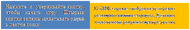 |
|
|||
|
|||
Программный код:
#include <LiquidCrystal.h>
LiquidCrystal lcd(12, 11, 5, 4, 3, 2);
int LEDR = 8; // Пин, подключенный к красному светодиоду
int LEDB = 7; // Пин, подключенный к синему светодиоду
int LEDGr = 6; // Пин, подключенный к зеленому светодиоду
int Button = 9; // Пин, подключенный к кнопке
int COLOR; // Переменная цвета
int Beep;
int PSE; // Переменная паузы
int TME; // Время
int RTME = 0; // Время реакции
void setup() {
lcd.begin(16, 2);
pinMode(LEDR, OUTPUT); // Установка пинов светодиодов на вывод
pinMode(LEDB, OUTPUT);
pinMode(LEDGr, OUTPUT);
pinMode(Button, INPUT); // Установка пина кнопки на ввод
digitalWrite(LEDR, LOW); // Включение всех цветов светодиодов
digitalWrite(LEDB, LOW);
digitalWrite(LEDGr, LOW);
}
void loop() {
lcd.clear(); // Очистка экрана
lcd.print("Hold Button to"); // Вывод сообщения на LCD экран
lcd.setCursor(0, 1); // Переход на вторую строку
lcd.print("start.");
while (digitalRead(Button) == LOW) {
tone(13, 1200, 30);
delay(1400);
noTone(13);
}
lcd.clear();
digitalWrite(LEDR, HIGH); // Выключение светодиодов начала
digitalWrite(LEDB, HIGH);
digitalWrite(LEDGr, HIGH);
randomSeed(analogRead(0)); // Случайное число из аналогового пина 0
COLOR = random(1, 4); // Генерация случайного цвета
PSE = random(500, 1200); // Генерация случайной паузы между светодиодами
// Повторение этого цикла, пока цвет не станет зеленым или синим И кнопка нажата
while (COLOR != 1 && digitalRead(Button) == HIGH) {
digitalWrite(LEDGr, HIGH);
digitalWrite(LEDB, HIGH);
delay(PSE);
randomSeed(analogRead(0));
Beep = random(1, 4);
// Выбор случайного сигнала из пьезоизлучателя
PSE = random(750, 1200);
// Выбор случайной паузы между светодиодами
if (Beep == 1) {
tone(13, 1600, 350);
delay(750);
noTone(13);
}
if (COLOR == 2) {
digitalWrite(LEDGr, LOW);
}
if (COLOR == 3) {
digitalWrite(LEDB, LOW);
}
delay(PSE);
randomSeed(analogRead(0));
COLOR = random(1, 4); // Выбор случайного цвета
} // Выполнение этого цикла, если цвет красный
if (COLOR == 1 && digitalRead(Button) == HIGH) {
digitalWrite(LEDGr, HIGH);
digitalWrite(LEDB, HIGH);
delay(PSE);
TME = millis();
// Запись времени с момента запуска программы
digitalWrite(LEDR, LOW);
while (digitalRead(Button) == HIGH) { // Запись времени реакции, пока кнопка нажата
delay(1);
}
lcd.display();
RTME = millis() - TME; // Время реакции в миллисекундах
lcd.print("Reaction Time:"); // Вывод на LCD экран
lcd.setCursor(0, 1);
lcd.print(RTME);
}
// Выполнение, если цвет НЕ красный, но кнопка отпущена
if (COLOR != 1) {
lcd.print("Released too");
lcd.setCursor(0, 1); // Переход на вторую строку
lcd.print("soon!!!");
tone(13, 3000, 1500);
delay(500);
noTone(13);
}// Игра не начнется заново, пока кнопка не будет нажата
while (digitalRead(Button) == LOW) {
delay(10);
}
digitalWrite(LEDR, LOW); // Сброс всех светодиодов для начала снова
digitalWrite(LEDB, LOW);
digitalWrite(LEDGr, LOW);
lcd.clear();
lcd.print("Hold Button to");
lcd.setCursor(0, 1);
lcd.print("start.");
int Time = 0;
delay(1000);
}
Результат работы:
Игра начинается, когда вы удерживаете кнопку. RGB-светодиод загорается и медленно меняет случайные цвета. Ваша задача - реагировать как можно быстрее, когда светодиод становится красным, и отпустить кнопку. На ЖК-экране отображается ваше время реакции в миллисекундах, от момента, когда светодиод стал красным, до момента, когда вы отпустили кнопку.
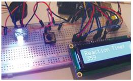
При игре вам нужно будет удерживать кнопку и в то же время светодиод RGB будет менять цвета, включая красный, зеленый и синий. Важно отреагировать максимально быстро, когда светодиод станет красным, и тогда отпустить кнопку. На ЖК-экране будет отображаться время вашей реакции в миллисекундах. При этом пьезоизлучатель будет издавать случайные звуки, чтобы отвлечь вас. Если вы слишком рано отпустите кнопку, на ЖК-экране появится сообщение об этом, и вам придется начать игру заново.
Контрольные вопросы:
1. Какую кнопку нужно удерживать, чтобы начать игру?
2. Какие цвета светодиода RGB могут появиться во время игры?
3. Что отображается на ЖК-экране?
4. Что делает пьезоизлучатель во время игры?
5. Что происходит, если игрок слишком рано отпустит кнопку?
6. Какими единицами измеряется время реакции, отображаемое на ЖК-экране?
Самостоятельная работа. Быстрый реактор
Цель: Создать игру, которая проверяет реакцию игрока на мигающие светодиоды и звуковые сигналы.
Задачи проекта:
Подключить Arduino или другую микроконтроллерную платформу.
Подключить светодиоды и пьезоизлучатель к микроконтроллеру.
Разработать программу, которая будет мигать светодиодами в случайном порядке и проигрывать случайные звуковые сигналы.
Настроить таймер реакции, который будет отсчитывать время от момента появления сигнала до момента, когда игрок нажимает кнопку.
Отобразить время реакции игрока на ЖК-экране или в консоли.
Обратите внимание, что для успешной реализации данной самостоятельной работы может потребоваться дополнительное изучение и использование специализированных библиотек и технологий.
1. Изучить принцип работы ультразвукового датчика и его возможности для обнаружения движения.
2. Собрать необходимое оборудование, включая ультразвуковой датчик, микроконтроллер и соединительные провода.
3. Программировать микроконтроллер для работы с ультразвуковым датчиком и обработки полученных данных.
4. Подключить ультразвуковой датчик к микроконтроллеру и проверить его работоспособность.
5. Разработать алгоритм обнаружения злоумышленника на основе данных, полученных от ультразвукового датчика.
6. Настроить систему таким образом, чтобы она могла отправлять уведомления или сигнализировать о обнаружении интруза.
7. Провести тестирование системы, используя различные сценарии симуляции вторжения.
8. Оценить эффективность и надежность системы обнаружения злоумышленника.
9. Провести необходимые доработки и улучшения системы, если это потребуется.
Требуемые детали:
Плата Ардуино
Макет
Проволочные перемычки
Четырехконтактный ультразвуковой датчик HC-SR04
Серводвигатель
Красный светодиод
Зеленый светодиод
2 резистора по 220 Ом
Схема:
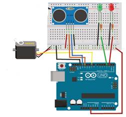
Код программы:
#include <NewPing.h> // Подключаем библиотеку NewPing
#include <Servo.h> // Подключаем библиотеку Servo
#define trigPin 12 // Пин Trig подключен к пину 12 Arduino
#define echoPin 13 // Пин Echo подключен к пину 13 Arduino
#define MAX_DISTANCE 500
NewPing sonar(trigPin, echoPin, MAX_DISTANCE); // Настройка библиотеки
int greenLed = 3, redLed = 2; // Зеленый светодиод на пине 3, красный на пине 2
int pos = 20;
Servo myservo;
void setup() {
Serial.begin(115200);
pinMode(trigPin, OUTPUT);
pinMode(echoPin, INPUT);
pinMode(greenLed, OUTPUT);
pinMode(redLed, OUTPUT);
myservo.attach(9); // Сервопривод подключен к пину 9
}
void loop() {
int duration, distance, pos = 0, i;
digitalWrite(trigPin, LOW);
delayMicroseconds(2);
digitalWrite(trigPin, HIGH); // Trig-пин отправляет ультразвуковой сигнал
delayMicroseconds(10);
digitalWrite(trigPin, LOW);
duration = pulseIn(echoPin, HIGH); // Echo-пин получает отклик
distance = (duration / 2) / 29.1;
Serial.print(distance);
Serial.println(" cm");
// Если датчик обнаруживает объект в пределах 15 см
if (distance <= 15) {
digitalWrite(greenLed, LOW); // Выключаем зеленый светодиод
digitalWrite(redLed, HIGH); // Включаем красный светодиод
myservo.write(180); // Поворачиваем сервопривод на 180 градусов
delay(450);
digitalWrite(redLed, LOW); // Включаем красный светодиод
myservo.write(90);
delay(450);
digitalWrite(redLed, HIGH);
myservo.write(0);
delay(450);
digitalWrite(redLed, LOW);
myservo.write(90);
}
// В противном случае
else {
digitalWrite(redLed, LOW); // Выключаем красный светодиод
digitalWrite(greenLed, HIGH); // Включаем зеленый светодиод
myservo.write(90);
}
delay(450);
}
В этом коде, если в пределах 15 сантиметров обнаруживается объект, выполняется следующий блок кода. При этом, контакт Trig на датчике подключен к контакту 12 на Arduino и используется для отправки ультразвукового сигнала или запроса. Когда сигнал достигает объекта, он возвращается обратно к модулю, и этот эхо-сигнал поступает на контакт 13 Arduino. Разница во времени между этими двумя сигналами позволяет определить расстояние. Если расстояние меньше или равно заданному минимуму, зеленый светодиод остается включенным. В противном случае, красный светодиод загорается, а сервопривод выполняет движение.
Контрольные вопросы:
1. Какой датчик используется в данной программе?
2. Какие контакты Arduino используются для подключения датчика?
3. Какой сигнал отправляет контакт Trig датчика?
4. Какой сигнал принимает контакт Echo датчика?
5. Как вычисляется расстояние на основе времени между отправкой и приемом сигнала?
6. Что происходит, если обнаруживается объект на расстоянии менее или равном 15 сантиметров?
7. Какие действия выполняются, если расстояние превышает 15 сантиметров?
8. Какой светодиод остается включенным, если объект не обнаружен?
9. Какой компонент управляет движением сервопривода?
10. Какие значения используются для задержки между действиями в программе?
Самостоятельная работа.
Цель: подключите камеру или веб-камеру к Arduino и создайте систему видеонаблюдения. Вы можете использовать движение или звуковые сигналы для активации записи видео и/или отправки уведомлений.
Ваша задача состоит в создании системы видеонаблюдения, которая будет использовать Arduino для управления камерой/веб-камерой и выполнения следующих функций:
Подключение камеры/веб-камеры к Arduino: Изучите документацию камеры/веб-камеры и определите, как ее можно подключить к Arduino. Подключите камеру/веб-камеру к соответствующим пинам Arduino или используйте необходимые интерфейсы (например, USB или модуль камеры).
Управление камерой: Напишите программный код, который позволит Arduino управлять камерой/веб-камерой. Реализуйте функции перемещения камеры в разные направления (поворот влево, вправо, вверх, вниз) с помощью сервопривода или другого механизма.
Обнаружение движения: Используйте датчик движения (например, PIR-датчик) для обнаружения движения в определенной области. При обнаружении движения активируйте запись видео и/или сделайте фотографию с помощью камеры/веб-камеры.
Активация звуковых сигналов: При обнаружении движения или других событий активируйте звуковые сигналы с помощью пьезоэлектрического излучателя или динамика.
Отправка уведомлений: При обнаружении движения или других событий отправьте уведомления на мобильное устройство с помощью Wi-Fi модуля или другого средства связи.
Интерфейс пользователя: Создайте простой интерфейс пользователя для управления системой видеонаблюдения. Используйте кнопки, дисплей или другие устройства ввода/вывода Arduino для настройки параметров и отображения информации о состоянии системы.
Дополнительные функции: Постарайтесь добавить дополнительные функции в систему видеонаблюдения, такие как запись видео на SD-карту, удаленное управление с помощью мобильного приложения или интеграция с облачными сервисами хранения данных.
Обратите внимание, что для успешной реализации данной самостоятельной работы может потребоваться дополнительное изучение и использование специализированных библиотек и технологий.
Цель: Arduino IDE включает встроенную функцию tone(), которая позволяет легко генерировать звуки заданной частоты. С помощью этой функции можно создавать прямоугольные звуковые волны на выбранном выводе Arduino. Функция tone() принимает три аргумента, хотя третий аргумент является необязательным:
Первый аргумент задает вывод, на котором будет воспроизводиться звук.
Второй аргумент определяет частоту звука.
Третий аргумент (необязательный) определяет длительность звука. Если третий аргумент не указан, то звук будет воспроизводиться до вызова функции noTone().
Задачи:
1. Подключите динамик или пьезоэлектрический излучатель к Arduino. Убедитесь, что вы правильно подключили динамик к соответствующим контактам.
2. Настройте Arduino IDE и подключите Arduino к компьютеру.
3. Напишите код программы на Arduino IDE для управления воспроизведением звуков. Используйте функцию tone() или соответствующие библиотеки для генерации звуковых сигналов.
4. Определите условия, при которых должны воспроизводиться звуки. Например, вы можете использовать датчики для обнаружения определенного события или установить определенные временные интервалы.
5. При наступлении условий, вызывайте функцию воспроизведения звука. Укажите нужную частоту и продолжительность для каждого звука.
6. Протестируйте систему, проверьте воспроизведение звуков в соответствии с заданными условиями.
Требуемые детали:
Ардуино Уно
USB-кабель
Кнопки (n5)
Резисторы 10 кОм (n5)
резистор 150 Ом
Перемычки
Макет
Потенциометр 10 кОм
Громкоговоритель 8 Ом
Схема:
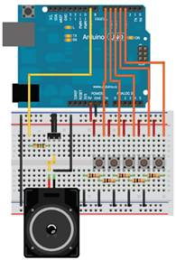
Программный код:
#define NOTE_C 262 // Гц
#define NOTE_D 294 // Гц
#define NOTE_E 330 // Гц
#define NOTE_G 392 // Гц
#define NOTE_A 440 // Гц
const int SPEAKER = 9; // Пин для динамика
const int BUTTON_C = 7; // Пин для кнопки C
const int BUTTON_D = 6; // Пин для кнопки D
const int BUTTON_E = 5; // Пин для кнопки E
const int BUTTON_G = 4; // Пин для кнопки G
const int BUTTON_A = 3; // Пин для кнопки A
void setup() {
pinMode(BUTTON_C, INPUT_PULLUP); // Установка режима входа с подтяжкой к питанию для кнопки C
pinMode(BUTTON_D, INPUT_PULLUP); // Установка режима входа с подтяжкой к питанию для кнопки D
pinMode(BUTTON_E, INPUT_PULLUP); // Установка режима входа с подтяжкой к питанию для кнопки E
pinMode(BUTTON_G, INPUT_PULLUP); // Установка режима входа с подтяжкой к питанию для кнопки G
pinMode(BUTTON_A, INPUT_PULLUP); // Установка режима входа с подтяжкой к питанию для кнопки A
noTone(SPEAKER); // Отключение звука перед началом работы
}
void loop() {
if (digitalRead(BUTTON_C) == LOW) // Если кнопка C нажата
{
tone(SPEAKER, NOTE_C); // Воспроизведение ноты C
while (digitalRead(BUTTON_C) == LOW) {} // Ожидание отпускания кнопки C
noTone(SPEAKER); // Отключение звука после отпускания кнопки
}
if (digitalRead(BUTTON_D) == LOW) // Если кнопка D нажата
{
tone(SPEAKER, NOTE_D); // Воспроизведение ноты D
while (digitalRead(BUTTON_D) == LOW) {} // Ожидание отпускания кнопки D
noTone(SPEAKER); // Отключение звука после отпускания кнопки
}
if (digitalRead(BUTTON_E) == LOW) // Если кнопка E нажата
{
tone(SPEAKER, NOTE_E); // Воспроизведение ноты E
while (digitalRead(BUTTON_E) == LOW) {} // Ожидание отпускания кнопки E
noTone(SPEAKER); // Отключение звука после отпускания кнопки
}
if (digitalRead(BUTTON_G) == LOW) // Если кнопка G нажата
{
tone(SPEAKER, NOTE_G); // Воспроизведение ноты G
while (digitalRead(BUTTON_G) == LOW) {} // Ожидание отпускания кнопки G
noTone(SPEAKER); // Отключение звука после отпускания кнопки
}
Контрольные вопросы:
1. Какие ноты соответствуют переменным NOTE_C, NOTE_D, NOTE_E, NOTE_G и NOTE_A в данном проекте?
2. Какой пин используется для подключения динамика?
3. Какие пины используются для подключения кнопок C, D, E, G и A?
4. Какой режим работы устанавливается для входов с кнопками?
5. Что происходит при нажатии на кнопку C?
6. Какая функция используется для воспроизведения звука определенной ноты?
7. Какой пин используется для управления звуком динамика в проекте?
8. Что происходит, когда кнопка отпускается?
9. Какая функция используется для отключения звука динамика?
10. Какие изменения в коде могут быть внесены, чтобы добавить обработку дополнительных кнопок или нот?
Самостоятельная работа: поменять код программы, который будет распознавать голос.
Уровень:**
Цель: Создать цифровой барограф с использованием SCP1000 и GLCD для отображения графика изменения давления во времени.
Задача:
1. Подключить SCP1000 к Arduino и настроить его для получения данных о давлении.
2. Подключить GLCD к Arduino и настроить его для отображения графики.
3. Разработать алгоритм для считывания данных о давлении с SCP1000 и сохранения их для построения графика.
4. Создать функцию для отображения графика давления на GLCD, используя полученные данные.
5. Настроить интерфейс пользователя, позволяющий управлять барографом, например, задавать временной интервал для отображения графика.
6. Проверить функциональность барографа, проведя несколько тестовых измерений и убедившись, что график правильно отображается на GLCD.
Требуемые детали:
Для этого проекта требуется тот же список компонентов, что и в проекте 31, за исключением добавления GLCD 128x64, дополнительного резистора и потенциометра. При выборе GLCD необходимо убедиться, что он оснащен микросхемой драйвера KS0108 или эквивалентной, поскольку будет использоваться библиотека glcd.h. Рекомендуется внимательно ознакомиться с техническим описанием перед покупкой GLCD.
Ардуино Мега
Датчик давления SCP1000
3 х 10кОм Резисторы
1 х1кОм Резистор
Резистор 150 Ом
Потенциометр 10 кОм
128х64 GLCD
Схема:
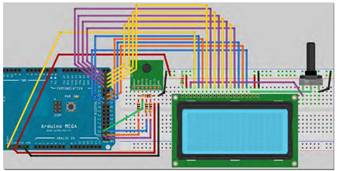
Код программы:
Перед тем как приступить к написанию кода, вам необходимо скачать и установить библиотеку GLCD.h. Эта библиотека, созданная Майклом Марголисом, находится на третьей версии и является отличным инструментом. В комплекте с ней идет подробная документация, которая показывает, как подключать различные типы ЖК-дисплеев, а также предоставляет полные инструкции по использованию всех команд в библиотеке. Вы можете найти ее на Arduino Playground. После скачивания библиотеки, распакуйте архив и поместите всю папку в па пку "libraries" в вашей установке Arduino. При следующем запуске Arduino IDE библиотека будет загружена и готова к использованию.
Программный код
#include <glcd.h>
#include "fonts/allFonts.h"
// Пины SPI
#define SLAVESELECT 53
#define SPICLOCK 52
#define DATAOUT 51 // MOSI
#define DATAIN 50 // MISO
#define UBLB(a, b) (((a) << 8) | (b))
#define UBLB19(a, b) (((a) << 16) | (b))
// Адреса
#define PRESSURE 0x1F // Старшие 3 бита давления
#define PRESSURE_LSB 0x20 // Младшие 16 бит давления
#define TEMP 0x21 // 16-битная температура
#define INTERVAL 900 // Интервал времени в секундах (примерно)
int dots[124], dotCursor = 0, counter = 0;
char rev_in_byte;
int temp_in;
float hPa;
unsigned long pressure_lsb;
unsigned long pressure_msb;
unsigned long temp_pressure;
unsigned long pressure;
void setup() {
GLCD.Init(); // инициализация библиотеки
GLCD.ClearScreen();
GLCD.SelectFont(System5x7, BLACK); // загрузка шрифта
byte clr;
pinMode(DATAOUT, OUTPUT);
pinMode(DATAIN, INPUT);
pinMode(SPICLOCK, OUTPUT);
pinMode(SLAVESELECT, OUTPUT);
digitalWrite(SLAVESELECT, HIGH); // отключение устройства
SPCR = B01010011; // Регистр управления SPI
clr = SPSR; // Регистр статуса SPI
clr = SPDR; // Регистр данных SPI
delay(10);
write_register(0x03, 0x09); // Режим высокой скорости чтения
write_register(0x03, 0x0A); // Режим высокого разрешения измерений
GLCD.DrawRect(1, 1, 125, 44); // Рисуем прямоугольник
for (int x = 0; x < 46; x += 11) { // Рисуем вертикальную шкалу
GLCD.SetDot(0, 1 + x, BLACK);
GLCD.SetDot(127, 1 + x, BLACK);
}
for (int x = 0; x < 128; x += 5) { // Рисуем горизонтальную шкалу
GLCD.SetDot(1 + x, 0, BLACK);
}
for (int x = 0; x < 124; x++) {
dots[x] = 1023;
}
getPressure();
drawPoints(dotCursor);
}
void loop() {
getPressure();
GLCD.CursorToXY(0, 49); // выводим давление
GLCD.print("hPa:");
GLCD.CursorToXY(24, 49);
GLCD.print(hPa);
temp_in = read_register16(TEMP);
float tempC = float(temp_in) / 20.0;
float tempF = (tempC * 1.8) + 32;
GLCD.CursorToXY(0, 57); // выводим температуру
GLCD.print("Temp:");
GLCD.CursorToXY(28, 57);
GLCD.print(tempC); // измените на tempF для вывода в фаренгейтах
delay(1000);
GLCD.CursorToXY(84, 49); // выводим тренд
GLCD.print("TREND:");
GLCD.CursorToXY(84, 57);
printTrend();
counter++;
if (counter == INTERVAL) {
drawPoints(dotCursor);
}
}
void drawPoints(int position) {
counter = 0;
dots[dotCursor] = int(hPa);
GLCD.FillRect(2, 2, 123, 40, WHITE); // очищаем область графика
for (int x = 0; x < 124; x++) {
GLCD.SetDot(125 - x, 44 - ((dots[position] - 980)), BLACK);
position--;
if (position < 0) {
position = 123;
}
}
dotCursor++;
if (dotCursor > 123) {
dotCursor = 0;
}
}
void getPressure() {
pressure_msb = read_register(PRESSURE);
pressure_msb &= B00000111;
pressure_lsb = read_register16(PRESSURE_LSB);
pressure_lsb &= 0x0000FFFF;
pressure = UBLB19(pressure_msb, pressure_lsb);
pressure /= 4;
hPa = float(pressure) / 100;
}
void printTrend() {
int dotCursor2 = dotCursor - 1;
if (dotCursor2 < 0) {
dotCursor2 = 123;
}
int val1 = dots[dotCursor2];
int dotCursor3 = dotCursor2 - 1;
if (dotCursor3 < 0) {
dotCursor3 = 123;
}
int val2 = dots[dotCursor3];
if (val1 > val2) {
GLCD.print("ПОВЫШЕНИЕ");
} else if (val1 == val2) {
GLCD.print("СТАБИЛЬНО");
} else {
GLCD.print("ПОНИЖЕНИЕ");
}
}
char spi_transfer(char data) {
SPDR = data; // Начинаем передачу
while (!(SPSR & (1 << SPIF))) // Ждем окончания передачи
{
};
return SPDR; // Возвращаем полученный байт
}
char read_register(char register_name) {
char in_byte;
register_name <<= 2;
digitalWrite(SLAVESELECT, LOW); // Включаем устройство SPI
spi_transfer(register_name); // Записываем байт в устройство
in_byte = spi_transfer(0x00); // Ничего не отправляем, но получаем значение регистра
digitalWrite(SLAVESELECT, HIGH); // Отключаем устройство SPI
delay(10);
return (in_byte); // Возвращаем значение
}
unsigned long read_register16(char register_name) {
byte in_byte1;
byte in_byte2;
float in_word;
register_name <<= 2;
digitalWrite(SLAVESELECT, LOW); // Включаем устройство SPI
spi_transfer(register_name); // Записываем байт в устройство
in_byte1 = spi_transfer(0x00);
in_byte2 = spi_transfer(0x00);
digitalWrite(SLAVESELECT, HIGH); // Отключаем устройство SPI
in_word = UBLB(in_byte1, in_byte2);
return (in_word); // Возвращаем значение
}
void write_register(char register_name, char register_value) {
register_name <<= 2;
register_name |= B00000010; // Команда записи
digitalWrite(SLAVESELECT, LOW); // Выбираем устройство SPI
spi_transfer(register_name); // Отправляем адрес регистра
spi_transfer(register_value); // Отправляем значение для записи в регистр
digitalWrite(SLAVESELECT, HIGH);
}
Контрольные вопросы:
1. Какие детали и компоненты были использованы в практической работе?
2. Какая библиотека была использована для работы с GLCD?
3. Какие пины Arduino были подключены к SPI интерфейсу для связи с GLCD?
4. Каким образом был настроен и инициализирован GLCD в функции setup()?
5. Что представляет собой функция drawPoints() и как она используется в программе?
6. Какие данные измеряются с помощью датчика SCP1000 в этой программе?
7. Какой формулой вычисляется значение давления в гектопаскалях (hPa) на основе полученных данных?
8. Какие данные выводятся на GLCD и как они отображаются на экране?
9. Что означает тренд давления, и как он вычисляется и отображается на экране GLCD?
10. Какие функции отвечают за чтение и запись данных в регистры SPI устройства?
Самостоятельная работа:
Напишите программу для Arduino, которая будет использовать датчик SCP1000 для измерения атмосферного давления и отображения его значений на графическом дисплее GLCD. Программа должна также отображать текущую температуру и изменения давления.
Требования к проекту:
1. Подключите датчик SCP1000 к Arduino, используя необходимые пины для коммуникации по SPI.
2. Подключите графический дисплей GLCD к Arduino, используя библиотеку GLCD.h.
3. Настройте и инициализируйте GLCD в функции setup(), установив необходимые параметры и очистив экран.
4. Реализуйте функцию getPressure(), которая будет считывать данные давления с датчика SCP1000 и вычислять значение в гектопаскалях (hPa).
5. Реализуйте функцию printTrend(), которая будет вычислять и отображать тренд изменения давления (подъем, падение или стабильность).
6. Реализуйте функцию drawPoints(), которая будет отображать график изменения давления на GLCD.
7. В основном цикле loop() считывайте данные давления и температуры, выводите их на GLCD, а также обновляйте график и тренд с определенным интервалом времени.
Обратите внимание, что для успешной реализации данной самостоятельной работы может потребоваться дополнительное изучение и использование специализированных библиотек и технологий.
8 - 9 Практическая работа
«Подключить Arduino к IoT»
Уровень:***
До того, как пытаться заставить Arduino обслуживать web-страницу, полезно разработать простую web-страницу отдельно от Arduino, чтобы убедиться, что она имеет желаемый внешний вид. Эта web-страница будет содержать простые кнопки для управления каждым светодиодом и ползунок для регулировки частоты воспроизведения динамика. Она будет использовать HTML-форму для отображения этих компонентов и будет использовать протокол HTTP GET для отправки команд с браузера на сервер. Однако, поскольку это только дизайн web-страницы, она фактически не будет подключена к серверу, поэтому взаимодействие с ней не будет вызывать каких-либо действий со стороны Arduino или других компонентов.
Схема:
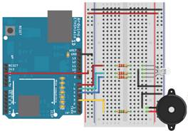
Сервер Arduino подключен к светодиоду RGB и динамику
Полезно разработать простую веб-страницу отдельно от Arduino, прежде чем пытаться заставить Arduino обслуживать ее, чтобы вы могли убедиться, что она выглядит так, как вы хотите. На вашей веб-странице будут простые кнопки для переключения каждого светодиода и ползунок для регулировки частоты воспроизведения динамика. Он будет использовать элементы формы HTML для отображения этих компонентов и будет использовать протокол HTTP GET для отправки команд из браузера на сервер. Когда вы разрабатываете веб-сайт, он на самом деле не будет подключен к серверу, поэтому взаимодействие с ним не вызовет никаких действий со стороны Arduino или чего-либо еще. Откройте ваш любимый текстовый редактор (я рекомендую Notepad++ для Windows, потому что он выделяет и кодирует ваш HTML-код цветом при сохранении в виде HTML-файла) и создайте новый файл с расширением .html. Неважно, как вы назовете файл; test.html будет работать нормально. Это будет очень простой веб-сайт, поэтому не беспокойтесь о том, чтобы сделать его полностью «совместимым» HTML-сайтом; в нем будут отсутствовать некоторые обычно используемые теги, такие как <body> и <head>.
<form action='' method='get'>
<input type='hidden' name='L' value='7' />
<input type='submit' value='Переключить красный' />
</form> <form action='' method='get'>
<input type='hidden' name='L' value='6' />
<input type='submit' value='Переключить зеленый' />
</form> <form action='' method='get'>
<form action='' method='get'>
<input type='hidden' name='L' value='5' />
<input type='submit' value='Переключить синий' />
</form> <form action='' method='get'>
<input type='range' name='S' min='0' max='1000' step='100' value='0'/>
<input type='submit' value='Установить частоту' />
</form>
Результат html страницы:
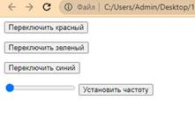
Эта HTML-страница содержит четыре элемента формы. Тег <form> определяет начало формы, а </form> указывает на ее конец. В каждой форме содержатся теги <input/>, которые определяют, какие данные будут отправлены на сервер при отправке формы.
Для светодиодных кнопок-переключателей переменная L будет передана на сервер с помощью метода GET, а значение переменной будет соответствовать номеру ввода-вывода, который будет переключаться. Пустое значение в атрибуте action тега <form> указывает на то, что та же самая страница должна быть перезагружена при отправке данных на сервер. Скрытое поле ввода <input type='hidden'> говорит о том, что значение будет просто передано при нажатии кнопки "Отправить".
Для ползунка частоты мы используем новый элемент ввода HTML5, который называется <input type='range'>. Он позволяет выбрать значение в определенном диапазоне. Пользователь может перемещать ползунок с шагом 100 для выбора желаемой частоты. Значение частоты будет передано на сервер в переменной с именем S.
Создание веб-сервера на Arduino: Учитывая все ранее перечисленные требования, теперь мы можем создать программу для веб-сервера на Arduino. Эти программы обычно достаточно сложны, так как требуют использования нескольких переменных состояния для отслеживания взаимодействия между клиентом и сервером. В листинге представлен пример программы, которая отлично подходит для управления RGB-светодиодом и динамиком. Если вы хотите добавить дополнительную функциональность с использованием большего числа переменных GET, это можно сделать довольно легко. В коде приведены комментарии, указывающие области, в которые можно вставить эту дополнительную функциональность.
Программный код:
#include <Ethernet.h>
#include <SPI.h>
const int BLUE = 5;
const int GREEN = 6;
const int RED = 7;
const int SPEAKER = 3;
int freq = 0;
int pin;
byte mac[] = { 0x90, 0xA2, 0xDA, 0x00, 0x4A, 0xE0 };
EthernetServer server = EthernetServer(80); // порт 80
boolean receiving = false; // для отслеживания получения данных
void setup() {
Serial.begin(9600);
pinMode(RED, OUTPUT);
pinMode(GREEN, OUTPUT);
pinMode(BLUE, OUTPUT);
if (!Ethernet.begin(mac))
{ Serial.println("Could not Configure Ethernet with DHCP.");
return; }
else { Serial.println("Ethernet Configured!"); }
server.begin();
Serial.print("Server Started.\nLocal IP: ");
Serial.println(Ethernet.localIP()); }
void loop()
{
EthernetClient client = server.available();
if (client) { boolean currentLineIsBlank = true;
boolean sentHeader = false;
while (client.connected())
{ if (client.available())
{ char c = client.read();
if (receiving && c == ' ')
receiving = false;
if (c == '?')
receiving = true;
if (receiving)
{
if (c == 'L')
{
Serial.print("Переключение вывода ");
pin = client.parseInt();
Serial.println(pin);
digitalWrite(pin, !digitalRead(pin));
break;
}
else if (c == 'S')
{
Serial.print("Установка частоты на ");
freq = client.parseInt();
Serial.println(freq);
if (freq == 0)
noTone(SPEAKER);
else
tone(SPEAKER, freq);
break;
}
// Добавьте аналогичные условия else if для управления другими компонентами
}
if (!sentHeader)
{
client.println("HTTP/1.1 200 OK");
client.println("Content-Type: text/html\n");
// Кнопка переключения красного светодиода
client.println("<form action='' method='get'>");
client.println("<input type='hidden' name='L' value='7' />");
client.println("<input type='submit' value='Переключить красный' />");
client.println("</form>");
// Кнопка переключения зеленого светодиода
client.println("<form action='' method='get'>");
client.println("<input type='hidden' name='L' value='6' />");
client.println("<input type='submit' value='Переключить зеленый' />");
client.println("</form>");
// Кнопка переключения синего светодиода
client.println("<form action='' method='get'>");
client.println("<input type='hidden' name='L' value='5' />");
client.println("<input type='submit' value='Переключить синий' />");
client.println("</form>");
// Ползунок для установки частоты динамика
client.println("<form action='' method='get'>");
client.print("<input type='range' name='S' min='0' max='1000' step='100' value='0'/>");
client.println("<input type='submit' value='Установить частоту' />");
client.println("</form>");
//Добавьте дополнительные формы для управления другими компонентами
sentHeader = true;
}
if (c == '\n' && currentLineIsBlank)
break;
if (c == '\n')
{
currentLineIsBlank = true;
}
else if (c != '\r')
{
currentLineIsBlank = false;
}
}
}
delay(5);
client.stop();
}
}
Данный код выполняет все функции, которые были описано высше. Убедитесь в том, что вы измените MAC-адрес в коде на адрес, указанный на наклейке вашей Arduino-платы. Если вы не можете найти этот адрес, вы все равно можете использовать адрес, указанный в коде. Загрузите код на Arduino и откройте последовательный монитор. Проверьте, что ваш Arduino подключен к сети, и что на маршрутизаторе включен DHCP (как это обычно бывает). Через несколько секунд соединение с DHCP должно быть установлено успешно, и вы увидите сообщение с назначенным Arduino IP-адресом.
Результат программного кода выглядит следующем образом:
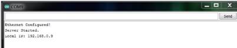
Подтверждение получения IP DHCP через последовательный порт
На рисунке показан пример, где Arduino был назначен локальный IP-адрес 192.168.0.9. В вашей сети это число скорее всего будет отличаться, поэтому обязательно проверьте его. Обратите внимание на этот IP-адрес, поскольку вам понадобится использовать его для доступа к web-интерфейсу, который вы только что запустили.
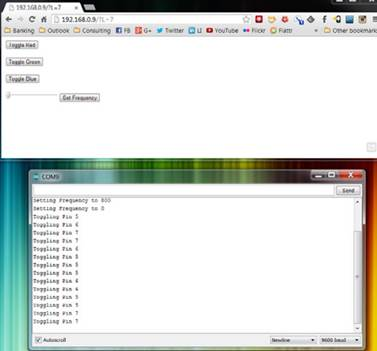
Дальше вы можете подключить датчики и проверять работу. Для того чтобы управлять Arduino с компьютеров вне вашей локальной сети, вам потребуется использовать передовые технологии, позволяющие установить соединение с вашим устройством через маршрутизатор из внешнего мира. Для этого вам нужно выполнить следующие шаги:
1. Зарезервируйте локальный IP-адрес DHCP, используемый вашим Arduino, чтобы он всегда получал один и тот же IP-адрес в вашей локальной сети.
2. Настройте переадресацию внешнего порта вашего маршрутизатора на внутренний порт, который указывает на ваш Arduino. Это позволит вам направлять внешние запросы к определенному порту на вашем маршрутизаторе к Arduino внутри вашей сети.
3. Подключите маршрутизатор к службе динамического обновления DNS (Dynamic DNS), которая позволит вам использовать доменное имя для доступа к вашему Arduino вместо IP-адреса. Служба динамического обновления DNS будет автоматически обновлять IP-адрес вашего маршрутизатора, чтобы он всегда был доступен по выбранному доменному имени.
Эти шаги позволят вам управлять вашим Arduino из любого места вне вашей локальной сети, используя доменное имя и настроенную переадресацию портов на вашем маршрутизаторе.
Важно отметить, что шаги, описанные в практической работе, являются расширенными и могут существенно отличаться в зависимости от модели и типа вашего маршрутизатора. Рекомендую обращаться к инструкциям, специфическим для вашего маршрутизатора, чтобы выполнить эти шаги. Если вы не имеете достаточного опыта в администрировании сетей и только начинаете осваивать административную панель маршрутизатора, не рекомендуется вам выполнять эти шаги, так как это может привести к нарушению настроек сети. Кроме того, некоторые маршрутизаторы могут не поддерживать все необходимые функции для настройки переадресации портов и динамического обновления DNS. Если вы не имеете опыта в сетевом администрировании, рекомендуется пока оставаться при локальном доступе к wev-интерфейсу вашего Arduino.
Создание потока данных в реальном времени на Xively
В этом примере вы используете web-сервис Xively для облегчения построения графиков некоторых датчиков, подключенных к вашему Arduino с доступом в Интернет. Подключившись к сайту Xively, вы устраняете большую часть тяжелой работы, которую обычно приходится выполнять для отображения ваших данных в Интернете.
Создание учетной записи Xively
Для начала посетите www.xively.com и зарегистрируйте бесплатную учетную запись. Перейдите по ссылке в письме с подтверждением, которое вы получите, и войдите на сайт.
Для использования функций связи Arduino с Xively через Интернет, вам необходимо установить библиотеки Xively и HttpClient. Библиотека Xively предоставляет удобные инструменты для взаимодействия с сервисом Xively, а библиотека HttpClient используется Xively и зависит от нее.
Вот пошаговая инструкция по установке этих библиотек:
1. Перейдите на GitHub и откройте следующие ссылки:
2. Xively библиотека: https://github.com/xively/xively-arduino
3. HttpClient библиотека: https://github.com/amcewen/HTTPClient
4. На каждой странице GitHub найдите кнопку "Download ZIP" и нажмите ее, чтобы скачать ZIP-архивы с кодом библиотек.
5. Сохраните загруженные ZIP-архивы на своем компьютере, например, на рабочем столе.
6. Разархивируйте ZIP-архивы и переименуйте папки библиотек, чтобы они не содержали дефисы. Рекомендуется переименовать папку "HttpClient-master" в "HttpClient" и папку "Xively-Arduino-master" в "Xively".
7. Откройте папку с библиотеками Arduino на вашем компьютере. Обычно она находится в следующем пути:
8. Для Windows: Документы/Arduino/libraries
9. Для macOS: Документы/Arduino/libraries
10. Для Linux: Домашняя папка/Arduino/libraries
11. Переместите скопированные папки библиотек (HttpClient и Xively) в папку libraries Arduino.
12. Перезапустите среду разработки Arduino IDE, если она была открыта во время копирования библиотек.
13. После перезапуска Arduino IDE откройте IDE и выберите "Файл" -> "Примеры". Убедитесь, что в списке примеров отображаются "HttpClient" и "Xively". Это означает, что библиотеки были успешно установлены.
Для подключения аналогового датчика к вашему Arduino, выполните следующие шаги:
1. Возьмите фоторезистор и резистор на 10 кОм.
2. Подключите один конец фоторезистора к пину A2 (аналоговый вход 2) на вашем Arduino.
3. Подключите другой конец фоторезистора к одному концу резистора на 10 кОм.
4. Подключите другой конец резистора на 10 кОм к земле (GND) на вашем Arduino.
5. Убедитесь, что все соединения надежны и хорошо зафиксированы.
После подключения аналогового датчика к вашему Arduino, подключите сам Arduino к компьютеру с помощью USB-кабеля и к вашей сети, используя Ethernet-подключение или другой доступный способ. Теперь ваш Arduino готов к работе с Xively и передаче данных с аналогового датчика на вашу учетную запись Xively.
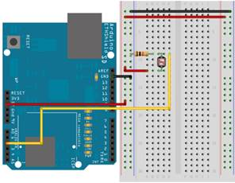
Для настройки Xively Sketch и запуска кода на вашем Arduino выполните следующие шаги:
1. Откройте пример скетча Xively в Arduino IDE (Файл > Примеры > xively > xively_arduino).
2. Найдите следующие три строки кода:
char mac_addr[] ="00:00:00:00:00:00";
char xively_key[] = "YOUR_XIVELY_API_KEY";
char feed_id[] = "YOUR_FEED_ID";
3. Замените "00:00:00:00:00:00" на MAC-адрес вашего Arduino Ethernet Shield. Вы можете найти этот адрес на наклейке на плате Arduino Ethernet Shield или использовать значение по умолчанию, указанное в примере скетча.
4. Замените "YOUR_XIVELY_API_KEY" на ваш ключ Xively API. Вы можете найти его на веб-странице Xively в разделе "Ключи API".
5. Замените "YOUR_FEED_ID" на идентификатор вашего канала Xively. Вы также можете найти его на веб-странице Xively в разделе "Ключи API".
6. Подключите Arduino к компьютеру с помощью USB-кабеля.
7. Убедитесь, что выбрана правильная плата и порт в Arduino IDE.
8. Нажмите кнопку "Загрузить" в Arduino IDE, чтобы скомпилировать и загрузить код на ваш Arduino.
9. Откройте монитор последовательного порта в Arduino IDE, чтобы просматривать вывод данных.
10. Arduino начнет отправлять данные с аналогового датчика на вашу учетную запись Xively. Вы сможете видеть эти данные в режиме реального времени на веб-странице Xively.
11. Убедитесь, что ваш Arduino подключен к сети и ваша учетная запись Xively настроена правильно, чтобы получить данные от Arduino.
Программный код:
#include <SPI.h>
#include <Ethernet.h>
#include <HttpClient.h>
#include <Xively.h>
// MAC-адрес вашего Ethernet Shield
byte mac[] = { 0x90, 0xA2, 0xDA, 0x00, 0x4A, 0xE0 };
// Ваш ключ Xively для загрузки данных
char xivelyKey[] = "qkjXS1oUKqbCG-hqh3fw4WIsdvOSAKx4ZXZYSWhGUWdxcz0g";
// Аналоговый пин, который мы мониторим (0 и 1 используются Ethernet Shield)
int sensorPin = 2;
// Определение строк для идентификаторов потоков данных
char sensorId[] = "sensor_reading";
XivelyDatastream datastreams[] = {
XivelyDatastream(sensorId, strlen(sensorId), DATASTREAM_FLOAT),
};
// Наконец, обернем потоки данных в канал
XivelyFeed feed(1242622121, datastreams, 1 /* количество потоков данных */);
EthernetClient client;
XivelyClient xivelyclient(client);
void setup() {
Serial.begin(9600);
Serial.println("Начало загрузки одного потока данных в Xively...");
Serial.println();
while (Ethernet.begin(mac) != 1) {
Serial.println("Ошибка получения IP-адреса через DHCP, попробуйте еще раз...");
delay(15000);
}
}
void loop() {
int sensorValue = analogRead(sensorPin);
datastreams[0].setFloat(sensorValue);
Serial.print("Считано значение датчика ");
Serial.println(datastreams[0].getFloat());
Serial.println("Загрузка в Xively");
int ret = xivelyclient.put(feed, xivelyKey);
Serial.print("xivelyclient.put вернул ");
Serial.println(ret);
Serial.println();
delay(15000);
}
Этот программа настраивает Arduino для считывания аналоговых значений с пина 2 и загрузки данных в Xively с помощью Ethernet Shield. Значение датчика обновляется в потоке данных и периодически отправляется в Xively в функции loop(). В коде настройки инициализируется подключение Ethernet и ожидается успешное получение IP-адреса через DHCP.
Убедитесь, что вы заменили MAC-адрес на соответствующий MAC-адрес вашего Ethernet Shield, и обновили xivelyKey своим собственным ключом API Xively.
После загрузки скетча на Arduino он будет непрерывно считывать значение датчика, обновлять поток данных и загружать его в Xively каждые 15 секунд. В мониторе последовательного порта будут отображаться значения датчика и результат операции загрузки.
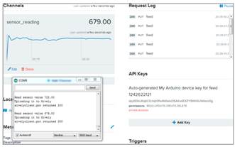
Световые данные отображаются на Xively
Контрольные вопросы:
1. Какие библиотеки необходимо подключить для работы с Xively и Ethernet на Arduino?
2. Что необходимо изменить в скетче, чтобы он работал с вашим Arduino и учетной записью Xively?
3. Какой пин используется для мониторинга аналогового сигнала?
4. Какие данные загружаются в Xively и в каком формате они передаются?
5. Как часто данные отправляются в Xively?
6. Какие действия выполняются в функции setup()?
7. Какие значения выводятся в монитор последовательного порта в функции loop()?
8. Какое значение используется для задержки между отправкой данных в Xively?
9. Какая функция используется для загрузки данных в Xively?
10. Как можно изменить скетч для работы с другими типами датчиков или добавления большего количества потоков данных?
Самостоятельная работа: добавить аналоговый датчик температуры TMP36 к Arduino и изменить существующий скетч для считывания значения температуры с датчика и загрузки его в учетную запись Xively.
Шаги:
1.Подключите датчик температуры TMP36 к аналоговому входу A3 вашего Arduino, используя резистор на 10 кОм и конденсатор на 0.1 мкФ, как показано на рисунке.
2.Внесите следующие изменения в скетч:
· Измените значение переменной sensorPin на 3, чтобы указать, что мы считываем данные с аналогового входа A3.
· Добавьте новую строку перед определением XivelyDatastream:
char temperatureId[] = "temperature";
· Внутри массива datastreams[], добавьте еще один элемент для датчика температуры:
XivelyDatastream temperatureDatastream(temperatureId, strlen(temperatureId), DATASTREAM_FLOAT);
· Внутри setup(), добавьте следующую строку после установки соединения Ethernet:
pinMode(sensorPin, INPUT);
· В функции loop(), перед загрузкой данных в Xively, добавьте следующий код для чтения значения температуры с датчика:
float temperature = analogRead(sensorPin) * 0.48875855; // Преобразование значения АЦП в градусы Цельсия
temperatureDatastream.setFloat(temperature);
3.Обновите объект feed, добавив новый элемент temperatureDatastream в массив datastreams[]:
XivelyFeed feed(1242622121, datastreams, 2 /* number of datastreams */);
4.Загрузите измененный скетч на ваш Arduino и откройте монитор последовательного порта.
5.Вы должны увидеть значения считываемой температуры и их отправку в учетную запись Xively.
6.Проверьте учетную запись Xively, чтобы убедиться, что данные температуры успешно загружены.
Теперь вы сможете отслеживать данные с двух датчиков (аналогового и температуры) в учетной записи Xively и использовать их для мониторинга или дальнейшего анализа.
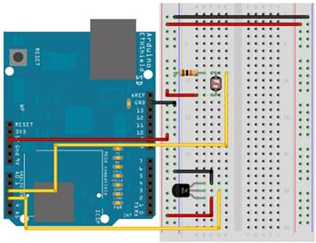
10-11 Практическая работа
«Ethernet Shield»
Уровень:***
Ethernet Shield - это расширительная плата для Arduino, которая позволяет подключить Arduino к сети Ethernet. С помощью Ethernet Shield Arduino может обмениваться данными по сети, получать информацию из Интернета, отправлять данные на удаленные серверы и многое другое. Ethernet Shield поддерживает протоколы TCP/IP и использует интерфейс SPI для связи с Arduino. Это позволяет Arduino работать как веб-сервер, клиент или выполнять другие сетевые задачи. Ethernet Shield обычно имеет разъем RJ45 для подключения сетевого кабеля и слот для карты SD для хранения данных или веб-страниц.
Цель данной практической работы состоит в следующем:
1. Использовать Ethernet Shield для подключения Arduino к сети Ethernet.
2. Подключить пару датчиков температуры (например, датчик температуры TMP36) к аналоговым входам Arduino.
3. Настроить Arduino для считывания значений температуры с датчиков.
4. Создать веб-интерфейс или серверную программу, которая будет принимать данные о температуре с Arduino через Ethernet.
5. Отображать текущие значения температуры на веб-интерфейсе или сохранять их на удаленном сервере для дальнейшего анализа или мониторинга.
6. Исследовать возможности дополнительной обработки или использования данных о температуре, полученных с помощью Ethernet Shield и датчиков температуры.
Целью работы является демонстрация возможностей Ethernet Shield и использование датчиков температуры для передачи данных через сеть Ethernet.
Требуемые детали:
Ethernet-щит Arduino
2 х DS18B20 Температура
Датчики
Резистор 4,7 кОм
Схема построение датчиков:
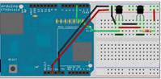
Программный код:
#include <SPI.h>
#include <Ethernet.h>
#include <OneWire.h>
#include <DallasTemperature.h>
// Пин, к которому подключена шина OneWire
#define ONE_WIRE_BUS 3
#define TEMPERATURE_PRECISION 12
float tempC, tempF;
// Инициализация экземпляра OneWire для общения с устройствами OneWire (не только с IC от Maxim/Dallas Temperature)
OneWire oneWire(ONE_WIRE_BUS);
DallasTemperature sensors(&oneWire);
// Массивы для хранения адресов устройств
DeviceAddress insideThermometer = { 0x10, 0x7A, 0x3B, 0xA9, 0x01, 0x08, 0x00, 0xBF };
DeviceAddress outsideThermometer = { 0x10, 0xCD, 0x39, 0xA9, 0x01, 0x08, 0x00, 0xBE };
byte mac[] = { 0x48, 0xC2, 0xA1, 0xF3, 0x8D, 0xB7 };
byte ip[] = { 192, 168, 0, 104 };
// Запуск сервера на порту 80
Server server(80);
void setup()
{
// Инициализация Ethernet и сервера
Ethernet.begin(mac, ip);
server.begin();
// Инициализация библиотеки для работы с датчиками
sensors.begin();
// Установка разрешения
sensors.setResolution(insideThermometer,TEMPERATURE_PRECISION);
sensors.setResolution(outsideThermometer,TEMPERATURE_PRECISION);
}
// Функция для получения температуры для устройства
void getTemperature(DeviceAddress deviceAddress)
{
tempC = sensors.getTempC(deviceAddress);
tempF = DallasTemperature::toFahrenheit(tempC);
}
void loop()
{
sensors.requestTemperatures();
// Ожидание входящих клиентов
Client client = server.available();
if (client)
{
// Запрос HTTP заканчивается пустой строкой
boolean BlankLine = true;
while (client.connected())
{
if (client.available())
{
char c = client.read();
// Если строка пустая и конец строки - символ новой строки '\n' = конец запроса HTTP
if (c == '\n' && BlankLine)
{
getTemperature(insideThermometer);
client.println("HTTP/1.1 200 OK"); // Стандартный HTTP-ответ
client.println("Content-Type: text/html\n");
client.println("<html><head><META HTTP-EQUIV=""refresh""CONTENT=""5"">\n");
client.println("<title>Arduino Web Server</title></head>");
client.println("<body>\n");
client.println("<h1>Arduino Web Server</h1>");
client.println("<h3>Внутренняя температура</h3>");
client.println("Температура в °C:");
client.println(tempC);
client.println("<br/>");
client.println("Температура в °F:");
client.println(tempF);
client.println("<br/>");
getTemperature(outsideThermometer);
client.println("<h3>Внешняя температура</h3>");
client.println("Температура в °C:");
client.println(tempC);
client.println("<br/>");
client.println("Температура в °F:");
client.println(tempF);
client.println("<br/>");
break;
}
if (c == '\n')
{
// Начало новой строки
BlankLine = true;
}
else if (c != '\r')
{
// В текущей строке есть символ
BlankLine = false;
}
}
}
// Ожидание для получения данных в браузере
delay(10);
// Закрытие соединения
client.stop();
}
}
Вам нужно будет ввести два номера адреса датчиков температуры в этом поле:
DeviceAddress insideThermometer = { 0x10, 0x7A, 0x3B, 0xA9, 0x01, 0x08, 0x00, 0xBF };
DeviceAddress outsideThermometer = { 0x10, 0xCD, 0x39, 0xA9, 0x01, 0x08, 0x00, 0xBE };
Вам также нужно будет изменить IP-адрес на один из ваших собственных. Для этого вам нужно будет узнать у вашего маршрутизатора, какой диапазон IP-адресов был выделен для устройств в вашей локальной сети. Обычно адрес начинается с 192.168.0 или 192.168.1, а затем вы можете добавить еще одно число выше 100. Убедитесь, что выбранный адрес не создаст конфликта с уже существующими устройствами в сети. Вам также может потребоваться войти в настройки маршрутизатора, чтобы настроить перенаправление портов, чтобы все HTTP-запросы на порт 80 перенаправлялись на IP-адрес Ethernet Shield. Для этого обратитесь к разделу "Перенаправление портов" в руководстве пользователя вашего маршрутизатора. Также может потребоваться открыть порт 80 в настройках брандмауэра.
Теперь откройте web-браузер и введите IP-адрес и порт, например:
192.168.0.104:80
Если все работает правильно, вы увидите в своем браузере web-страницу, показанную на рисунке.
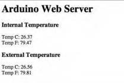
Если переадресация портов и настройка брандмауэра на вашем маршрутизаторе были выполнены правильно, вы сможете получить доступ к этой веб-странице из любого места с доступом в Интернет. Для этого вам нужно будет знать IP-адрес вашего маршрутизатора, который можно найти на странице администрирования маршрутизатора. Введите этот IP-адрес, а затем номер порта в адресную строку любого web-браузера. Например, "95.121.118.204:80". После этого вы увидите указанную web-страницу в своем браузере и сможете проверять показания температуры из любого места с доступом в Интернет.
Контрольные вопросы:
1. Какие библиотеки необходимо подключить для работы с Ethernet Shield и датчиками температуры?
2. Какой пин используется для подключения шины OneWire?
3. Какие адреса устройств используются для внутреннего и внешнего датчиков температуры?
4. Какая функция используется для получения температуры для определенного устройства?
5. Какая строчка кода отвечает за отправку HTTP-ответа с данными о температуре на веб-страницу?
6. Какое разрешение устанавливается для датчиков температуры?
7. Как часто страница автоматически обновляется для отображения изменений температуры?
Самостоятельная работа: использовать предоставленного кода программы для создания web-сервера с использованием Ethernet Shield и добавления функционала отображения погоды в Казахстане на web-странице. Для достижения этой цели необходимо интегрировать API погоды, например, OpenWeatherMap, в код программы и настроить запросы для получения информации о погодных условиях в Казахстане. Полученные данные о погоде должны быть отображены на web-странице, которую можно получить через web-сервер Arduino.
12-13 Практическая работа
«Разработка умной перчатки для управления электронными устройствами»
Уровень:***
Цель: разработать умную перчатку, которая будет позволять пользователю управлять электронными устройствами, например, компьютером или смартфоном, с помощью жестов и датчиков, встроенных в перчатку.
Задачи:
Идентифицировать необходимые датчики и компоненты для реализации умной перчатки, например, гироскопы, акселерометры, датчики сгибания пальцев и т.д.
Подключить датчики к Arduino или другому контроллеру и настроить их для считывания данных о движении и позиции пальцев.
Разработать алгоритм обработки данных с датчиков и их преобразования в команды для управления электронными устройствами, например, симуляцию нажатия клавиш на клавиатуре или жесты для управления курсором на экране.
Реализовать беспроводную связь между умной перчаткой и управляемыми устройствами, например, Bluetooth или Wi-Fi модуль для передачи команд.
Создать пользовательский интерфейс или приложение для управления и настройки умной перчатки, например, калибровку датчиков или определение жестов.
Проверить работоспособность умной перчатки, выполнив различные жесты и команды для управления выбранными электронными устройствами.
Практические навыки:
Подключение датчиков: Навык подключения и настройки различных датчиков к контроллеру (например, Arduino), включая гироскопы, акселерометры и датчики сгибания пальцев.
Программирование контроллера: Умение разрабатывать программное обеспечение на языке программирования, поддерживаемом выбранным контроллером (например, Arduino IDE), для обработки данных с датчиков и генерации команд для управления электронными устройствами.
Беспроводная связь: Навык настройки и использования беспроводных модулей связи (например, Bluetooth или Wi-Fi), чтобы обеспечить передачу команд от умной перчатки к управляемым устройствам.
Интеграция с устройствами: Умение интегрировать умную перчатку с различными электронными устройствами, такими как компьютеры, смартфоны или другие умные устройства.
Тестирование и отладка: Навык проведения тестирования умной перчатки для проверки работоспособности и отладки возможных проблем.
Управление жестами: Умение разработки алгоритмов и программного кода для распознавания и обработки жестов, выполняемых пользователем с помощью умной перчатки.
Пользовательский интерфейс: Навык разработки пользовательского интерфейса или мобильного приложения для управления и настройки умной перчатки, включая интерфейс для калибровки датчиков и определения жестов.
Проектирование и сборка: Умение проектировать и собирать физическую конструкцию умной перчатки, включая расположение датчиков и их крепление на перчатке.
Проектная работа: Навык организации проектной работы, включая планирование, управление ресурсами и документирование выполненных этапов и результатов работы.
Выполняя данную практическую работу, вы приобретете практические навыки в области электроники, программирования, беспроводной связи и разработки
Подключение датчиков: Подключите датчики, такие как гироскопы, акселерометры и датчики сгибания пальцев, к выбранному контроллеру (например, Arduino) в соответствии с их схемой подключения. Обычно датчики имеют выходы для питания, заземления и сигнала, которые должны быть подключены к соответствующим пинам на контроллере.
Подключение модуля беспроводной связи: Если вы планируете использовать беспроводную связь для передачи команд от умной перчатки к управляемым устройствам, подключите соответствующий модуль (например, Bluetooth или Wi-Fi модуль) к контроллеру с учетом его схемы подключения. Обычно модули беспроводной связи также требуют питания, заземления и пина для передачи данных.
Подключение дополнительных компонентов: Если ваша умная перчатка требует дополнительных компонентов, например, кнопок или светодиодов, подключите их к контроллеру в соответствии с их схемой подключения.
Питание: Обеспечьте питание для всех подключенных компонентов, включая контроллер, датчики и модуль беспроводной связи. Убедитесь, что питание соответствует требованиям компонентов и используйте правильные напряжения и токи.
Проверка подключения: После того, как вы завершили подключение схемы, проверьте правильность подключения, убедитесь, что все компоненты подключены к соответствующим пинам на контроллере и правильно питаются.
#include <Wire.h>
#include <Adafruit_GFX.h>
#include <Adafruit_SSD1306.h>
#include <MPU6050_tockn.h>
Adafruit_SSD1306 display(128, 64);
MPU6050 mpu6050(Wire);
const int LED_PIN = 13;
void setup() {
Serial.begin(9600);
Wire.begin();
mpu6050.begin();
mpu6050.calcGyroOffsets(true);
display.begin(SSD1306_SWITCHCAPVCC, 0x3C);
display.clearDisplay();
display.setTextSize(2);
display.setTextColor(SSD1306_WHITE);
display.setCursor(0, 0);
display.println("Smart Glove");
display.display();
delay(2000);
}
void loop() {
Vector rawGyro = mpu6050.readRawGyro();
float pitch = rawGyro.YAxis;
if (pitch > 45) {
digitalWrite(LED_PIN, HIGH);
display.clearDisplay();
display.setTextSize(2);
display.setTextColor(SSD1306_WHITE);
display.setCursor(0, 0);
display.println("Gesture: Up");
display.display();
} else {
digitalWrite(LED_PIN, LOW);
display.clearDisplay();
display.setTextSize(2);
display.setTextColor(SSD1306_WHITE);
display.setCursor(0, 0);
display.println("Gesture: Neutral");
display.display();
}
Serial.print("Pitch: ");
Serial.println(pitch);
delay(500);
}
Программный код использует библиотеки Wire для работы с I2C, Adafruit_GFX и Adafruit_SSD1306 для работы с OLED-дисплеем и библиотеку MPU6050_tockn для работы с гироскопом MPU6050. В функции setup() мы инициализируем соединение с последовательным портом, I2C, датчиком гироскопа и OLED-дисплеем. Затем выводим приветственное сообщение на дисплей и ждем 2 секунды. В функции loop() мы считываем значение угла наклона (pitch) с гироскопа и в зависимости от его значения, включаем или выключаем светодиод на перчатке. Также выводим значение pitch в последовательный порт и обновляем информацию на OLED-дисплее. Затем делаем задержку в 500 миллисекунд и повторяем процесс.
Контрольные вопросы:
1. Что такое умная перчатка и какие преимущества она предоставляет?
2. Какие компоненты необходимы для создания умной перчатки?
3. Какие датчики могут использоваться для определения положения и движения руки в умной перчатке?
4. Каким образом умная перчатка обрабатывает данные с датчиков для распознавания жестов руки?
5. Какая плата микроконтроллера используется в умной перчатке и за что она отвечает?
6. Какие языки программирования и библиотеки могут быть использованы для разработки программного кода умной перчатки?
7. Как происходит передача команд от умной перчатки к управляемым устройствам?
8. Какие устройства могут быть управляемыми с помощью умной перчатки?
9. Какие факторы необходимо учесть при тестировании и отладке умной перчатки?
10. Как можно дальше усовершенствовать умную перчатку для расширения ее функциональности и улучшения пользовательского опыта?
14-15 Практическая работа
Цель: Разработать приложение системы пожарной сигнализации с использованием операционной системы RIOT, которое обеспечивает низкий уровень энергопотребления.
Задачи:
Изучить основы работы с операционной системой RIOT и ее возможности для разработки систем пожарной сигнализации.
Определить необходимые компоненты и датчики для создания системы пожарной сигнализации.
Разработать программный код для мониторинга и обработки данных от датчиков пожарной сигнализации.
Создать интерфейс для взаимодействия с пользователем и отображения информации о возможных пожарных событиях.
Протестировать разработанную систему пожарной сигнализации и оценить ее энергопотребление и эффективность.
Построение схем:
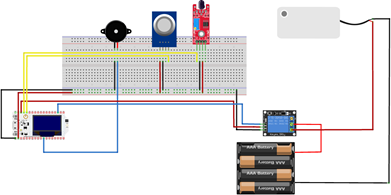
Примечание! Схема датчика была разработана на онлайн-платформе Tinkercad.com.
Список сенсоров:
1. ESP32 Heltec LoRa32 v2
2. Модуль датчика пламени KY-026
3. Модуль датчика газа MQ-2
4. Активный зуммер
5. Реле представляет собой устройство, основанное на принципе электромеханики, которое управляет размыканием или замыканием контактов выключателя при подаче электрического тока.
6. Водная помпа представляет собой компактный и доступный погружной насос, способный работать от источника питания с напряжением от 2,5 до 6 В. Его производительность составляет до 120 литров в час при очень низком потреблении тока в размере 220 мА.
Программный код:
#include <lmic.h>
#include <hal/hal.h>
#include <SPI.h>
#define IR_FLAME_PIN A0
#define GAS_PIN A2
#define BUZZER_PIN 5
#define RELAY_PIN 6
#define DELAY (60 * 1000) // Задержка в миллисекундах
#define FLAME_THRESHOLD 70
#define MAX_JOIN_RETRIES 3
uint8_t msg_to_be_sent[200];
char* msg_received = NULL;
bool fire;
bool gas;
bool buzz;
bool pump;
int sample_fire = 0;
int sample_gas = 0;
int flame = 0;
int gas_value = 0;
float voltage_flame = 0;
float voltage_gas = 0;
int buzzer_frequency = 1000; // Частота зуммера в Гц
bool joinLoRaNetwork(void) {
int joinRetries = 0;
while (joinRetries < MAX_JOIN_RETRIES) {
Serial.print("Запуск процедуры соединения (попытка ");
Serial.print(joinRetries + 1);
Serial.println(")");
if (LMIC.startJoining() == 0) {
Serial.println("Процедура присоединения запущена ");
return true; // Присоединиться успешно, вернуть значение true
}
else {
Serial.println("Процедура присоединения не удалась ");
joinRetries++;
}
delay(5000); // Подождите 5 секунд перед повторной попыткой
}
Serial.println("Превышено максимальное количество попыток присоединения ");
return false; // Присоединение не удалось после максимального количества попыток, возвращаем false
}
void buzzer_on() {
tone(BUZZER_PIN, buzzer_frequency);
delay(1000); // Подождите 1 секунду
noTone(BUZZER_PIN);
delay(400); // Подождите 400 миллисекунд
}
void setup() {
Serial.begin(9600);
pinMode(IR_FLAME_PIN, INPUT);
pinMode(GAS_PIN, INPUT);
pinMode(BUZZER_PIN, OUTPUT);
pinMode(RELAY_PIN, OUTPUT);
digitalWrite(RELAY_PIN, HIGH); // Установите вывод реле на высокий уровень (неактивное состояние)
LMIC.begin(868E6); // Установите частоту LoRa на 868 МГц (регион ЕС)
#ifdef USE_OTAA
if (!joinLoRaNetwork()) {
Serial.println("Не удалось подключиться к сети ");
while (1) {} // Остановить программу
}
#endif
}
void loop() {
sample_fire = analogRead(IR_FLAME_PIN);
voltage_flame = map(sample_fire, 0, 4095, 0, 3300) / 1000.0;
flame = map(sample_fire, 0, 4095, 1, 100);
sample_gas = analogRead(GAS_PIN);
voltage_gas = map(sample_gas, 0, 4095, 0, 3300) / 1000.0;
gas_value = map(sample_gas, 0, 4095, 100, 1);
fire = (flame > FLAME_THRESHOLD) ? true : false;
gas = (gas_value > 40) ? true : false;
if (gas || fire) {
buzz = true;
buzzer_on();
if (gas) {
Serial.println("GAS DETECTED");
} else {
Serial.println("NO GAS DETECTED");
}
if (fire) {
Serial.println("FIRE DETECTED");
pump = true;
digitalWrite(RELAY_PIN, LOW); // Установите вывод реле на низкий уровень (активное состояние)
}
else {
Serial.println("NO FIRE DETECTED");
pump = false;
digitalWrite(RELAY_PIN, HIGH); // Установите вывод реле на высокий уровень (неактивное состояние)
}
}
else {
buzz = false;
pump = false;
digitalWrite(RELAY_PIN, HIGH); // Установить релейный выход на высокий уровень (неактивное состояние)
}
Serial.print("Voltage_fire: ");
Serial.print(voltage_flame);
Serial.print(" mV\tFlame: ");
Serial.println(flame);
Serial.print("Voltage_gas: ");
Serial.print(voltage_gas);
Serial.print(" mV\tGAS: ");
Serial.println(gas_value);
sprintf((char*)msg_to_be_sent, "{\"id\": \"%d\", \"voltage\": \"%.2f\", \"flame\": \"%d\", \"gas\": \"%.2d\", \"pump\": \"%s\"}",1, voltage_flame, flame, gas_value, pump ? "ACTIVE" : "NON_ACTIVE");
Serial.print("Sending: ");
Serial.println((char*)msg_to_be_sent);
MIC.setTxData2(1, msg_to_be_sent, strlen((char*)msg_to_be_sent), 0);
delay(DELAY);
}
Сетевая архиректура:
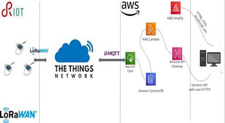
Этот код относится к разработке приложения для сети Интернета вещей (IoT). Он использует технологию LoRaWAN для связи с удаленной сетью и передачи данных. В данном случае, Arduino выполняет роль устройства IoT, которое собирает информацию от датчиков о пламени и газе, и передает ее через сеть LoRaWAN.
Контрольные вопросы:
1. Какую операционную систему использует система пожарной сигнализации с низким уровнем энергопотребления?
2. Что является основным преимуществом использования операционной системы RIOT в данной системе?
3. Какой протокол связи обычно используется для передачи данных в системе пожарной сигнализации на базе RIOT?
4. Каким образом система пожарной сигнализации снижает свой уровень энергопотребления?
5. Какая компонента обеспечивает обнаружение пожара в данной системе?
6. Какая компонента отвечает за передачу сигнала пожара по беспроводной сети?
7. Какая функция выполняется при использовании низкого уровня энергопотребления в системе пожарной сигнализации?
8. Каким образом система реагирует на обнаружение пожара?
9. Какая компонента отвечает за предупреждение людей о пожаре в системе пожарной сигнализации?
10. Какую информацию можно передавать по беспроводной сети в системе пожарной сигнализации на базе RIOT?
Самостоятельная работа: Разработка приложения для мониторинга окружающей среды на базе операционной системы RIOT
Цель: Разработать приложение на базе операционной системы RIOT для мониторинга окружающей среды, которое будет собирать данные о различных параметрах среды и предоставлять информацию в режиме реального времени.
Задачи работы:
Изучить основные концепции и принципы операционной системы RIOT, включая архитектуру, управление ресурсами и механизмы связи.
Исследовать сенсоры и устройства, необходимые для мониторинга различных параметров окружающей среды, таких как температура, влажность, освещение, уровень шума и другие.
Выбрать подходящий микроконтроллер и необходимое аппаратное обеспечение для разработки системы мониторинга окружающей среды.
Разработать программное обеспечение для сбора данных от сенсоров, их обработки и предоставления пользователю в удобном формате.
Реализовать функцию удаленного доступа к данным через сеть, позволяющую пользователям мониторить окружающую среду из любого места.
Оптимизировать работу приложения для минимизации энергопотребления, исследовав режимы энергосбережения и оптимальное использование ресурсов.
Провести тестирование и оценку эффективности и производительности разработанного приложения на базе операционной системы RIOT для мониторинга окружающей среды.
Проанализировать полученные результаты и сделать выводы о работе приложения, его функциональности и возможностях дальнейшего улучшения и расширения.
Составить отчет о выполненной работе, включающий описание разработанного приложения, оценку его производительности, а также предложения по дальнейшему развитию и применению в реальных сценариях мониторинга окружающей среды.
Общая структура программы:
Подключение необходимых библиотек и заголовочных файлов для работы с датчиками и операционной системой RIOT.
Определение и настройка пинов или интерфейсов для подключения датчика температуры, влажности и освещенности к микроконтроллеру.
Инициализация датчиков и настройка их параметров, таких как разрешение и период опроса.
Организация цикла чтения данных с датчиков и передачи их в операционную систему RIOT.
Обработка полученных данных, включая расчет среднего значения или других статистических характеристик, если необходимо.
Отправка данных на удаленный сервер или предоставление их через сетевой интерфейс для удаленного мониторинга.
Реализация режимов энергосбережения, если необходимо, для минимизации энергопотребления датчиков и микроконтроллера.
Добавление необходимых функций или обработчиков для управления приложением, таких как настройка параметров, смена режимов работы или обработка событий.
Тестирование и отладка программы, включая проверку корректности считываемых данных и функциональности приложения.
Примечание: Для разработки полноценной программы вам потребуется более подробное изучение документации по операционной системе RIOT и использованным датчикам, а также опыт программирования на данной платформе.
Тестовые вопросы
1.Какой компонент используется для отображения температуры на термометре с LCD-дисплеем?
a) Датчик температуры
b) Микроконтроллер
c) LCD-дисплей
d) Резистор
Ответ: c) LCD-дисплей
2.Какие функции Arduino используются для управления LCD-дисплеем?
a) pinMode() и digitalWrite()
b) Serial.begin() и Serial.print()
c) lcd.begin() и lcd.print()
d) analogRead() и analogWrite()
Ответ: c) lcd.begin() и lcd.print()
3.Какие шаги необходимо выполнить для создания термометра с LCD-дисплеем на Arduino?
a) Подключить датчик температуры, настроить LCD-дисплей, считывать значение температуры и выводить на дисплей
b) Подключить датчик влажности, настроить LCD-дисплей, считывать значение влажности и выводить на дисплей
c) Подключить кнопку, настроить LCD-дисплей, считывать состояние кнопки и выводить на дисплей
d) Подключить RGB-светодиод, настроить LCD-дисплей, изменять цвет светодиода в зависимости от значения температуры
Ответ: a) Подключить датчик температуры, настроить LCD-дисплей, считывать значение температуры и выводить на дисплей
4.Какие преимущества имеет использование LCD-дисплея для отображения температуры?
a) Широкий угол обзора и высокая контрастность
b) Низкое энергопотребление и высокая точность измерений
c) Быстрая реакция на изменение температуры и большой размер экрана
d) Возможность вывода графических изображений и поддержка цветовых схем
Ответ: a) Широкий угол обзора и высокая контрастность
5.Какой тип переменной используется для хранения значения температуры в программе термометра с LCD-дисплеем?
a) int
b) float
c) char
d) bool
Ответ: b) float
6.Какой диапазон температур можно измерить с помощью типичного датчика температуры, используемого в термометрах?
a) От -50°C до +50°C
b) От -100°C до +100°C
c) От -200°C до +200°C
d) От -300°C до +300°C
Ответ: b) От -100°C до +100°C
7.Какая библиотека Arduino обычно используется для работы с LCD-дисплеями?
a) Wire.h
b) Servo.h
c) LiquidCrystal_I2C.h
d) Stepper.h
Ответ: c) LiquidCrystal_I2C.h
8.Какой тип команды используется для установки курсора на определенную позицию на LCD-дисплее?
a) setCursor()
b) print()
c) clear()
d) begin()
Ответ: a) setCursor()
9.Какая функция Arduino используется для инициализации подключенного LCD-дисплея?
a) begin()
b) attach()
c) pinMode()
d) write()
Ответ: a) begin()
10.Как можно улучшить функциональность термометра с LCD-дисплеем?
a) Добавить возможность отображения графика изменения температуры
b) Использовать цветной LCD-дисплей для более яркого отображения
c) Реализовать функцию записи и чтения исторических данных температуры
d)Добавить возможность установки предупреждающих пороговых значений температуры
Ответ: Все варианты ответа верны (a, b, c, d)
11.Какой датчик используется для мониторинга температуры и влажности на Arduino?
a) DHT11
b) LM35
c) DS18B20
d) BMP180
Ответ: a) DHT11
12.Какие типы данных используются для хранения значений температуры и влажности, считанных с датчика DHT11?
a) int и float
b) float и char
c) int и char
d) float и bool
Ответ: b) float и char
13.Какие библиотеки Arduino необходимо подключить для работы с датчиком DHT11?
a) Wire.h и Servo.h
b) EEPROM.h и SoftwareSerial.h
c) LiquidCrystal_I2C.h и Ethernet.h
d) DHT.h и Adafruit_Sensor.h
Ответ: d) DHT.h и Adafruit_Sensor.h
14.Какой тип команды используется для инициализации датчика DHT11 на Arduino?
a) dht.begin()
b) dht.initialize()
с) dht.setup()
d) dht.init()
Ответ: a) dht.begin()
15.Какие функции Arduino используются для считывания значений температуры и влажности с датчика DHT11?
a) dht.getTemperature() и dht.getHumidity()
b) dht.readTemperature() и dht.readHumidity()
c)dht.measureTemperature() и dht.measureHumidity()
d) dht.fetchTemperature() и dht.fetchHumidity()
Ответ: b) dht.readTemperature() и dht.readHumidity()
16.Какой модуль используется для реализации передачи данных по Wi-Fi?
a) ESP8266
b) Bluetooth HC-05
c) Zigbee
d) RFM69
Ответ: a) ESP8266
17.Какая библиотека Arduino обычно используется для работы с модулем ESP8266?
a) Wire.h
b) Servo.h
c) LiquidCrystal_I2C.h
d) ESP8266WiFi.h
Ответ: d) ESP8266WiFi.h
18.Какие функции Arduino используются для установки соединения с Wi-Fi сетью?
a) WiFi.begin() и WiFi.connect()
b) WiFi.send() и WiFi.receive()
c) WiFi.on() и WiFi.off()
d) WiFi.write() и WiFi.read()
Ответ: a) WiFi.begin() и WiFi.connect()
19.Какой тип соединения обычно используется для передачи данных по Wi-Fi с модулем ESP8266?
a) UDP
b) TCP
c) HTTP
d) MQTT
Ответ: b) TCP
20.Какая функция Arduino используется для отправки данных по Wi-Fi?
a) WiFi.sendData()
b) WiFi.write()
c) WiFi.println()
d) WiFiClient.write()
Ответ: d) WiFiClient.write()
21. Какая функция Arduino используется для получения данных по Wi-Fi?
a) WiFi.readData()
b) WiFi.read()
c) WiFiClient.read()
d) WiFi.receive()
Ответ: c) WiFiClient.read()
22.Какие действия необходимо выполнить для подключения модуля ESP8266 к Wi-Fi сети?
a) Указать имя сети и пароль в коде программы
b) Настроить модуль ESP8266 на подключение к Wi-Fi сети вручную
c) Подключить дополнительные антенны к модулю ESP8266
d) Сконфигурировать модуль ESP8266 через AT команды
Ответ: a) Указать имя сети и пароль в коде программы
23.Какой компонент обычно используется для проигрывания аудиосигналов на Arduino?
a) Пьезоэлектрический динамик
b) Микрофонный модуль
c) Датчик звука
d) Bluetooth модуль
Ответ: a) Пьезоэлектрический динамик
24.Какие функции Arduino используются для проигрывания аудиосигналов через пьезоэлектрический динамик?
a) tone() и noTone()
b) analogRead() и analogWrite()
c) digitalWrite() и digitalRead()
d) pulseIn() и pulseOut()
Ответ: a) tone() и noTone()
25.Какие параметры можно настроить при использовании функции tone() для проигрывания аудиосигнала?
a) Частоту и длительность звука
b) Громкость и темп звука
c) Задержку и частоту изменения звука
d) Только частоту звука
Ответ: a) Частоту и длительность звука
26.Какие функции Arduino используются для проигрывания аудиофайлов на более сложных системах?
a) tone() и noTone()
b) analogRead() и analogWrite()
c) digitalWrite() и digitalRead()
d) play() и stop()
Ответ: d) play() и stop()
27.Какие форматы аудиофайлов обычно поддерживаются при проигрывании на Arduino?
a) WAV
b) MP3
c) FLAC
d) Все варианты ответа верны (a, b, c)
Ответ: d) Все варианты ответа верны (a, b, c)
28.Какие библиотеки Arduino обычно используются для проигрывания аудиофайлов на более сложных системах?
a) Tone.h и Melody.h
b) Audio.h и Wave.h
c) MP3Player.h и SD.h
d) MIDI.h и Sound.h
Ответ: c) MP3Player.h и SD.h
29.Какой компонент используется для проигрывания аудиосигналов в цифровом формате на Arduino?
a) MP3-модуль
b) FM-модуль
c) Датчик звука
d) Усилитель мощности
Ответ: a) MP3-модуль
30.Какая функция Arduino используется для установки громкости аудиосигнала?
a) setVolume()
b) setGain()
c) setLevel()
d) setAmplitude()
Ответ: a) setVolume()
31.Какие функции Arduino используются для управления проигрыванием аудиосигналов?
a) play() и stop()
b) start() и pause()
c) forward() и rewind()
d) volumeUp() и volumeDown()
Ответ: a) play() и stop()
32.Какие действия необходимо выполнить для подключения MP3-модуля к Arduino?
a) Подключить модуль к аналоговому пину Arduino
b) Подключить модуль к цифровому пину Arduino
c) Подключить модуль к пинам питания и земли Arduino
d) Подключить модуль к пинам UART Arduino
Ответ: b) Подключить модуль к цифровому пину Arduino
33.Что представляет собой цифровой барограф?
a) Устройство для измерения и записи атмосферного давления
b) Устройство для измерения и записи влажности воздуха
c) Устройство для измерения и записи температуры
d) Устройство для измерения и записи скорости ветра
Ответ: a) Устройство для измерения и записи атмосферного давления
34.Какой тип датчика обычно используется в цифровом барографе для измерения атмосферного давления?
a) Датчик температуры
b) Датчик влажности
c) Датчик давления
d) Датчик освещенности
Ответ: c) Датчик давления
35.Какие единицы измерения обычно используются для атмосферного давления?
a) Вольты (V)
b) Амперы (A)
c) Паскали (Pa)
d) Градусы Цельсия (°C)
Ответ: c) Паскали (Pa)
36.Какая функция Arduino используется для считывания значений с датчика давления?
a) pressure.read()
b) pressure.getValue()
c) pressure.readPressure()
d) pressure.getReading()
Ответ: c) pressure.readPressure()
37.Каким образом цифровой барограф может записывать и сохранять измеренные данные?
a) Во встроенной памяти устройства
b) На внешней SD-карте
c) Через серийный порт на компьютер
d) В облачное хранилище данных
Ответ: b) На внешней SD-карте
37.Что такое IoT?
a) Internet of Things
b) Integrated Online Technology
c) Internet of Technology
d) Integrated Object Tracking
Ответ: a) Internet of Things
38.Какое устройство обычно используется для беспроводного подключения Arduino к интернету в IoT?
a) Wi-Fi модуль
b) Bluetooth модуль
c) NFC модуль
d) Zigbee модуль
Ответ: a) Wi-Fi модуль
39.Какой тип модуля используется для подключения Arduino к интернету по сетевому кабелю в IoT?
a) Wi-Fi модуль
b) Bluetooth модуль
c) Ethernet Shield
d) GSM модуль
Ответ: c) Ethernet Shield
40.Какая функция Arduino используется для установления соединения с интернетом через Wi-Fi модуль?
a) WiFi.begin()
b) WiFi.connect()
c) WiFi.start()
d) WiFi.connectToInternet()
Ответ: a) WiFi.begin()
41.Какая функция Arduino используется для установления соединения с интернетом через Ethernet Shield?
a) Ethernet.begin()
b) Ethernet.connect()
c) Ethernet.start()
d) Ethernet.connectToInternet()
Ответ: a) Ethernet.begin()
42.Каким образом Arduino может обмениваться данными с удаленным сервером в IoT?
a) Через HTTP запросы
b) Через SMS сообщения
c) Через Bluetooth соединение
d) Через NFC коммуникацию
Ответ: a) Через HTTP запросы
43.Какие типы данных могут быть переданы между Arduino и удаленным сервером в IoT?
a) Текстовые данные
b) Аудиофайлы
c) Графические изображения
d) Все варианты ответа верны (a, b, c)
Ответ: d) Все варианты ответа верны (a, b, c)
44.Какой тип разъема используется для подключения Ethernet Shield к Arduino?
a) USB
b) HDMI
c) Ethernet
d) GPIO
Ответ: c) Ethernet
45.Какая библиотека Arduino обычно используется для работы с Ethernet Shield?
a) WiFi.h
b) Bluetooth.h
c) Ethernet.h
d) GSM.h
Ответ: c) Ethernet.h
46.Какая функция Arduino используется для установления соединения с интернетом через Ethernet Shield?
a) Ethernet.begin()
b) Ethernet.connect()
c) Ethernet.setup()
d) Ethernet.connectToInternet()
Ответ: a) Ethernet.begin()
47.Каким образом Arduino может обмениваться данными с удаленным сервером с использованием Ethernet Shield?
a) Через HTTP запросы
b) Через Bluetooth соединение
c) Через NFC коммуникацию
d) Через SMS сообщения
Ответ: a) Через HTTP запросы
48.Какие типы данных могут быть переданы между Arduino и удаленным сервером с использованием Ethernet Shield?
a) Текстовые данные
b) Аудиофайлы
c) Графические изображения
d) Все варианты ответа верны (a, b, c)
Ответ: d) Все варианты ответа верны (a, b, c)
49.Какие пины Arduino обычно используются для подключения Ethernet Shield?
a) 0 и 1
b) A4 и A5
c) 10, 11, 12 и 13
d) 3.3V и GND
Ответ: c) 10, 11, 12 и 13
50.Какое напряжение питания требуется для Ethernet Shield?
a) 3.3V
b) 5V
c) 9V
d) 12V
Ответ: b) 5V
51.Какое соединение необходимо установить между Ethernet Shield и маршрутизатором для доступа к интернету?
a)Подключить Ethernet Shield напрямую к маршрутизатору с помощью сетевого кабеля
b)Использовать беспроводное соединение Wi-Fi для связи с маршрутизатором
c) Использовать Bluetooth соединение для связи с маршрутизатором
d)Подключить Ethernet Shield к компьютеру и использовать его интернет-соединение
Ответ: a) Подключить Ethernet Shield напрямую к маршрутизатору с помощью сетевого кабеля
52.Какая функция Arduino используется для отправки HTTP запроса с использованием Ethernet Shield?
a) Ethernet.sendRequest()
b) Ethernet.writeRequest()
c) Ethernet.client().get()
d) Ethernet.client().post()
Ответ: c) Ethernet.client().get()
53.Какая функция Arduino используется для чтения HTTP ответа, полученного с использованием Ethernet Shield?
a) Ethernet.readResponse()
b) Ethernet.getResponse()
c) Ethernet.client().read()
d) Ethernet.client().getResponse()
Ответ: c) Ethernet.client().read()
54.Что представляет собой умная перчатка?
a) Устройство для защиты рук от холода и повреждений
b) Устройство для управления электронными устройствами с помощью жестов и сенсоров
c) Устройство для измерения физиологических показателей руки
d) Устройство для записи и передачи данных о движениях руки
Ответ: b) Устройство для управления электронными устройствами с помощью жестов и сенсоров
55.Какие типы сенсоров могут быть использованы в умной перчатке?
a) Гироскоп и акселерометр
b) Датчик температуры и влажности
c) Датчик давления и пульса
d) Камера и микрофон
Ответ: a) Гироскоп и акселерометр
56.Какой тип беспроводного модуля обычно используется для связи умной перчатки с управляемыми устройствами?
a) Wi-Fi модуль
b) Bluetooth модуль
c) NFC модуль
d) Zigbee модуль
Ответ: b) Bluetooth модуль
57.Какой тип микроконтроллера Arduino обычно используется в умной перчатке?
a) Arduino Uno
b) Arduino Mega
c) Arduino Nano
d) Arduino Pro Mini
Ответ: c) Arduino Nano
58.Каким образом умная перчатка может управлять электронными устройствами?
a) Через жесты руки, обнаруженные с помощью сенсоров
b) Через физическую нажимную кнопку на перчатке
c) Через голосовые команды, распознаваемые микрофоном
d) Через текстовые команды, вводимые на смартфоне
Ответ: a) Через жесты руки, обнаруженные с помощью сенсоров
59.Какая функция Arduino используется для чтения данных с гироскопа или акселерометра в умной перчатке?
a) analogRead()
b) digitalRead()
c) Wire.read()
d) Wire.requestFrom()
Ответ: c) Wire.read()
60.Какой тип активации обычно используется для управления умной перчаткой?
a) Голосовая активация
b) Жестовая активация
c) Касание активация
d) Датчик активация
Ответ: b) Жестовая активация
61.Какая функция Arduino обычно используется для передачи данных с умной перчатки на управляемое устройство по Bluetooth?
a) Serial.print()
b) Serial.begin()
c) Serial.write()
d) Serial.read()
Ответ: c) Serial.write()
62.Какие действия необходимо выполнить для обеспечения бесперебойного питания умной перчатки?
a) Подключить перчатку к источнику постоянного тока
b) Использовать литий-ионный аккумулятор
c) Подключить перчатку к солнечной панели
d) Все варианты ответа верны (a, b, c)
Ответ: d) Все варианты ответа верны (a, b, c)
63.Какой компонент обычно используется для визуализации информации на умной перчатке?
a) OLED-дисплей
b) LCD-дисплей
c) LED-индикаторы
d) Тачскрин
Ответ: a) OLED-дисплей
64.Каким образом умная перчатка может взаимодействовать с мобильным устройством?
a) Через Bluetooth соединение
b) Через NFC коммуникацию
c) Через Wi-Fi соединение
d) Через USB-подключение
Ответ: a) Через Bluetooth соединение
65.Какая функция Arduino используется для чтения данных с сенсоров в умной перчатке?
a) analogRead()
b) digitalRead()
c) readSensor()
d) readData()
Ответ: a) analogRead()
66.Что такое операционная система RIOT?
a) Операционная система для автомобилей
b) Операционная система для мобильных устройств
c) Операционная система для интернета вещей
d) Операционная система для настольных компьютеров
Ответ: c) Операционная система для интернета вещей
67.Какая особенность операционной системы RIOT связана с низким уровнем энергопотребления?
a) Оптимизированное управление энергией
b) Поддержка высокоскоростных сетей
c) Обширная библиотека графических интерфейсов
d) Высокая степень совместимости с другими операционными системами
Ответ: a) Оптимизированное управление энергией
68.Какие компоненты обычно используются в системе пожарной сигнализации на базе RIOT для обнаружения пожара?
a) Датчики температуры
b) Датчики движения
c) Датчики газа
d) Все варианты ответа верны (a, b, c)
Ответ: d) Все варианты ответа верны (a, b, c)
69.Какая функция операционной системы RIOT обычно используется для передачи сигналов пожарной сигнализации?
a) Чтение данных с датчиков
b) Обработка данных и вычисления
c) Отправка данных по сети
d) Визуализация информации на экране
Ответ: c) Отправка данных по сети
70.Каким образом система пожарной сигнализации на базе RIOT может оповещать о пожаре?
a) Звуковыми сигналами
b) Визуальными сигналами
c) Уведомлениями на мобильное устройство
d) Все варианты ответа верны (a, b, c)
Ответ: d) Все варианты ответа верны (a, b, c)
71.Какой тип сетевого протокола обычно используется для связи между устройствами в системе пожарной сигнализации на базе RIOT?
a) TCP/IP
b) Bluetooth
c) Zigbee
d) NFC
Ответ: a) TCP/IP
72.Какая функция операционной системы RIOT обычно используется для управления ресурсами и расписания задач?
a) schedule()
b) manageResources()
c) runTasks()
d) controlScheduling()
Ответ: a) schedule()
73.Каким образом система пожарной сигнализации на базе RIOT может отправлять оповещения о пожаре на удаленный сервер?
a) Через HTTP запросы
b) Через SMS сообщения
c) Через Bluetooth соединение
d) Через NFC коммуникацию
Ответ: a) Через HTTP запросы
74.Какие действия необходимо выполнить для обеспечения низкого уровня энергопотребления в системе пожарной сигнализации на базе RIOT?
a) Использовать энергоэффективные датчики
b) Оптимизировать алгоритмы обработки данных
c) Переходить в спящий режим в неактивных периодах
d) Все варианты ответа верны (a, b, c)
Ответ: d) Все варианты ответа верны (a, b, c)
75.Какая функция операционной системы RIOT обычно используется для обработки прерываний от датчиков в системе пожарной сигнализации?
a) interruptHandler()
b) handleInterrupt()
c) processInterrupt()
d) attachInterrupt()
Ответ: d) attachInterrupt()
76.Какой тип датчика можно использовать для обнаружения злоумышленника?
a) Ультразвуковой датчик
b) Термический датчик
c) Газовый датчик
d) Оптический датчик
Ответ: a) Ультразвуковой датчик
77.Какая функция Arduino используется для измерения расстояния с помощью ультразвукового датчика?
a) analogRead()
b) digitalRead()
c) ultrasonicRead()
d) pulseIn()
Ответ: d) pulseIn()
78.Какой компонент используется для движения сервопривода?
a) Мотор
b) Резистор
c) Конденсатор
d) Серводвигатель
Ответ: d) Серводвигатель
79.Какой цвет светодиода гаснет, когда кто-то подходит на определенное расстояние?
a) Зеленый
b) Красный
c) Синий
d) Желтый
Ответ: a) Зеленый
80.Какой цвет светодиода включается, когда кто-то подходит на определенное расстояние?
a) Зеленый
b) Красный
c) Синий
d) Желтый
Ответ: b) Красный
81.Какая функция Arduino используется для управления светодиодами?
a) analogWrite()
b) digitalWrite()
c) ledOn()
d) ledOff()
Ответ: b) digitalWrite()
82.Какая функция Arduino используется для управления положением серводвигателя?
a) servo.attach()
b) servo.write()
c) servo.move()
d) servo.control()
Ответ: b) servo.write()
83.Какая единица измерения обычно используется для расстояния, измеряемого ультразвуковым датчиком?
a) Метры
b) Километры
c) Сантиметры
d) Миллиметры
Ответ: c) Сантиметры
84.Какая функция Arduino используется для задержки выполнения программы на определенное время?
a) delayMicroseconds()
b) delaySeconds()
c) pause()
d) delay()
Ответ: d) delay()
85.Каким образом можно улучшить систему обнаружения злоумышленника с использованием ультразвукового датчика?
a) Добавить дополнительные светодиоды для индикации состояний
b) Использовать более точный датчик расстояния
c) Подключить датчик движения для дополнительной обнаружения
d) Все варианты ответа верны (a, b, c)
Ответ: d) Все варианты ответа верны (a, b, c)
86.Какой метод обнаружения движения может быть использован с ультразвуковым датчиком?
a) Определение изменения электрического поля
b) Измерение изменения освещенности
c) Обнаружение отраженного ультразвука
d) Использование инфракрасных лучей
Ответ: c) Обнаружение отраженного ультразвука
87.Какая функция Arduino используется для активации ультразвукового датчика?
a) ultrasonic.begin()
b) ultrasonic.activate()
c) ultrasonic.enable()
d) Нет специальной функции, датчик активируется автоматически
Ответ: d) Нет специальной функции, датчик активируется автоматически
88.Какой принцип работы ультразвукового датчика основан на эхолокации?
a) Измерение времени прохождения ультразвуковых волн до объекта и обратно
b) Измерение изменения ёмкости при прохождении ультразвука
c) Измерение изменения сопротивления при прохождении ультразвука
d) Измерение изменения индуктивности при прохождении ультразвука
Ответ: a) Измерение времени прохождения ультразвуковых волн до объекта и обратно
89.Какой диапазон расстояния можно измерить с помощью ультразвукового датчика?
a) От 0 до 10 метров
b) От 0 до 100 метров
c) От 0 до 1000 метров
d) От 0 до 10000 метров
Ответ: a) От 0 до 10 метров
90.Каким образом можно улучшить точность обнаружения злоумышленника с помощью ультразвукового датчика?
a) Калибровка датчика перед использованием
b) Использование более высокочастотного ультразвукового датчика
c) Установка дополнительных рефлекторов для улучшения отражения сигнала
d) Все варианты ответа верны (a, b, c)
Ответ: d) Все варианты ответа верны (a, b, c)
Список литературы
1. "Arduino: A Technical Reference" Дж. М. Хьюз, 2016
2. Arduino в учебнике техники и технологии", Л. Бахмана и М. Плешакова, 2017.
3. "Practical Arduino: Cool Projects for Open Source Hardware", J.Oxer и H.Bleming, 2009.
4.Информатика, методическое руководство, Ж.К.Нурбекова, А.Е.Сагимбаева, 2013
5.Practicum on educational robotics: teaching-methodological aid, Ж.К.Нурбекова, К.М.Мухамедиева, А.Ж.Асаинова, Г.Ш.Нургазинова, 2018
6.Роботтарды құру және модельдеу: оқу-әдістемелік құралы, Ж.К.Нурбекова, Т.Толғанбайұлы, Н.Н.Оспанов, 2020
7.Internet of things (IoT):the educational and methodical manual, A.B.Zakirova, Zh.B.Akhayeva, A.K. Alzhanov. - Almaty : New book, 2021
8.Роботтарды программалау негіздері пәніне арналған оқу-әдістемелік құрал (Mindstorms NXT), М. Серік, Г.Ф. Нурбекова, Г.М. Жармаганбетова. - Астана : Л.Н. Гумилев атындағы ЕҰУ, 2015
9. "Arduino и Raspberry Pi в проектах Интернета вещей", Р. Гэнтли.- "Питер", 2016.
10. Arduino Project Hub. [Электронный ресурс]: https://create.arduino.cc/projecthub
11. Arduino Forum. [Электронный ресурс]: https://forum.arduino.cc/
12.Adafruit Learning System. [Электронный ресурс]: https://learn.adafruit.com/category/arduino
13.Arduino Stack Exchange. [Электронный ресурс]: https://arduino.stackexchange.com/
14. Arduino Workshop. John Boxall, 2013//
https://www.prorobot.ru/load/arduino-workshop-a-hands-on-Introduction.pdf
15.Practical Electronics For Inventers//Paul Schers and Simon Monk, http://instrumentacion.qi.fcen.uba.ar/libro/Scherz.pdf
16. Exploring Arduino: Tools and Techniques for Engineering Wizardry//Jeremy Blum//"Exploring Arduino: Tools and Techniques for Engineering Wizardry"- 2013
17. Arduino Cookbook//Michael Margolis//Arduino Cookbook-2011
ЗАКИРОВА А.Б, ТУТКЫШБАЕВА Ш.С., АБдильдаева А.А.
Учебное пособие «IoT (Интернет вещей)»
Бумага офсетная Формат 60х100 1/16
Плотность 80 гр/м2. Белизна 95%. Печать РИЗО
Усл.печ.стр.12.Объем 79 стр
Подготовлено к изданию и отпечатано в издательстве «АСТАНА»
РК, Астана, ул Какой то, 56
тел.:000000000000000
e-mail:kz.ksp@mail.ru